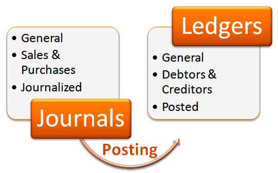
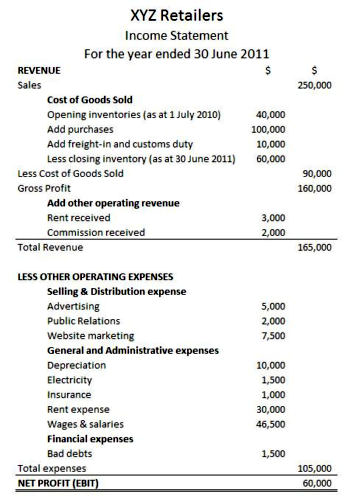
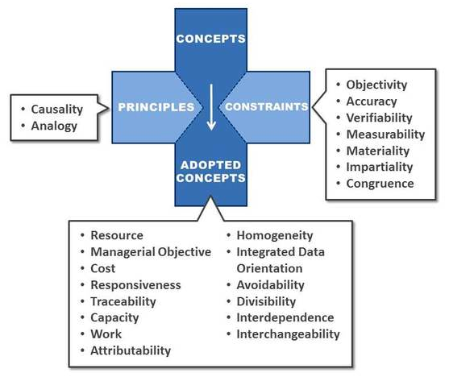
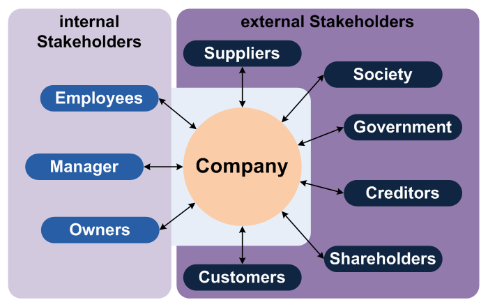
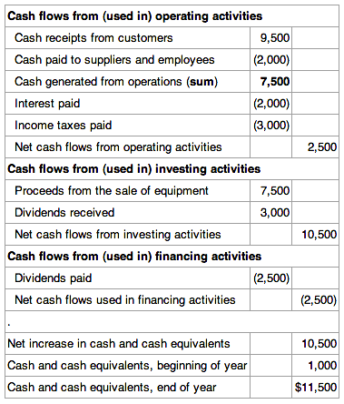
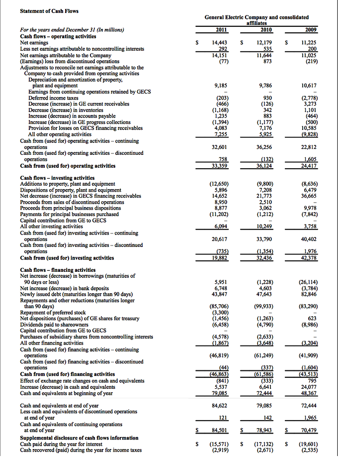
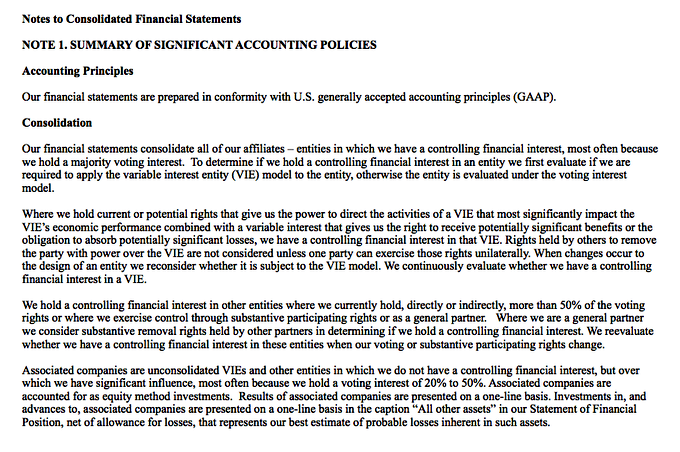
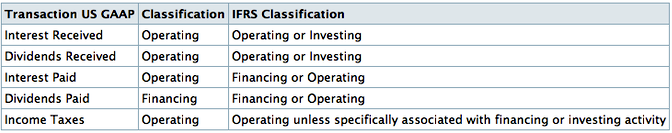

Table of Contents
1. Introduction to Accounting
1.1. What Is Accounting?
1.1.1. Defining Accounting
1.1.1. Inputs to Accounting
1.1.1. Outputs of Accounting
1.1.1. Uses of Financial Reports
1.2. The Accounting Concept
1.2.1. Reasons for a Conceptual Framework
1.2.1. Objectives of Accounting
1.2.1. Fundamental Concepts in Accounting
1.2.1. Importance of Recognition and Measurement
1.3. Overview of Key Elements of the Business
1.3.1. Business Stakeholders: Internal and External
1.3.1. Activities of the Business: Financing, Investing, and Operating
1.3.1. The Role of Accounting in the Business
1.3.1. Ethical Considerations
1.4. Conveying Accounting Information
1.4.1. Introduction to the Balance Sheet
1.4.1. Introduction to the Income Statement
1.4.1. Introduction to the Retained Earning Statement
1.4.1. Introduction to the Statement of Cash Flows
1.4.1. Relationships Between Statements
1.4.1. Financial Statement Notes
1.4.1. Additional Items: Auditor and Management Reports
1.5. Conventions and Standards
1.5.1. Standard-Setting Groups: SEC, AICPA, and FASB
1.5.1. Introduction to GAAP
1.5.1. Introduction to IFRS
1.5.1. Differences Between GAAP and IFRS and Implications of Potential Convergence
1.5.1. Full-Disclosure Principle
1.5.1. The Disclosure Process
1.5.1. Events Triggering Disclosure
1.5.1. Current Issues in Reporting and Disclosure
1. Introduction to Accounting
1.1. What Is Accounting?
1.1.1. Defining Accounting
Accountancy is the process of communicating financial information about a business entity to users such as shareholders and managers.
Learning Objective
Explain the purpose of accounting
Key Points
- Accounting is thousands of years old; the earliest accounting records, which date back more than 7,000 years, were found in Mesopotamia (Assyrians).
- Luca Pacioli's "Summa de Arithmetica, Geometria, Proportioni et Proportionalità" represents the first known printed treatise on bookkeeping; and it is widely believed to be the forerunner of modern bookkeeping practice.
- Double-entry bookkeeping is defined as any bookkeeping system in which there was a debit and credit entry for each transaction.
Key Terms
- ledger
- A collection of accounting entries consisting of credits and debits.
- bookkeeping
- The skill or practice of keeping books or systematic records of financial transactions, e.g., income and expenses.
Introduction
Accountancy is the process of communicating financial information about a business entity to users such as stakeholders and managers. The communication is generally in the form of financial statements that show in money terms the economic resources under the control of management; the art lies in selecting the information that is relevant to the user. The principles of accountancy are applied to business entities in three divisions of practical art: accounting, bookkeeping, and auditing.
Accounting Defined
The American Institute of Certified Public Accountants (AICPA) defines accountancy as "the art of recording, classifying, and summarizing, in a significant manner and in terms of money, transactions and events which are, in part at least, of financial character, and interpreting the results thereof. "
History
The earliest accounting records were found amongst the ruins of ancient Babylon, Assyria and Sumeria, which date back more than 7,000 years. The people of that time relied on primitive accounting methods to record the growth of crops and herds. Because there is a natural season to farming and herding, it is easy to count and determine if a surplus had been gained after the crops had been harvested or the young animals weaned.
When medieval Europe moved to a monetary economy in the 13th century, sedentary merchants depended on bookkeeping to oversee multiple simultaneous transactions financed by bank loans. One important breakthrough took place around that time: the introduction of double-entry bookkeeping, which is defined as any bookkeeping system in which there was a debit and credit entry for each transaction, or for which the majority of transactions were intended to be of this form. The historical origin of the use of the words 'debit' and 'credit' in accounting goes back to the days of single-entry bookkeeping in which the chief objective was to keep track of amounts owed by customers (debtors) and amounts owed to creditors. Thus, 'Debit,' from the Latin word debere means 'he owes' and 'Credit', from the Latin word credere, means 'he trusts'.
The earliest extant evidence of full double-entry bookkeeping is the Farolfi ledger of 1299-1300. Giovanno Farolfi & Company were a firm of Florentine merchants whose head office was in Nîmes, and who also acted as moneylenders to the Archbishop of Arles, their most important customer. The oldest discovered record of a complete double-entry system is the Messari (Italian: "Treasurer's") accounts of the city of Genoa in 1340. The Messari accounts contain debits and credits journalized in a bilateral form, and contain balances carried forward from the preceding year. Therefore, they enjoy general recognition as a double-entry system.
Luca Pacioli's "Summa de Arithmetica, Geometria, Proportioni et Proportionalità" (early Italian: "Review of Arithmetic, Geometry, Ratio and Proportion") was first printed and published in Venice in 1494. It included a 27-page treatise on bookkeeping, "Particularis de Computis et Scripturis" (Latin: "Details of Calculation and Recording"). It was written primarily for, and sold mainly to, merchants who used the book as a reference text, as a source of pleasure from the mathematical puzzles it contained, and to aid the education of their sons. It represents the first known printed treatise on bookkeeping; and it is widely believed to be the forerunner of modern bookkeeping practice.
In "Summa Arithmetica," Pacioli introduced symbols for plus and minus for the first time in a printed book, symbols that became standard notation in Italian Renaissance mathematics. "Summa Arithmetica" was also the first known book printed in Italy to contain algebra. Although Luca Pacioli did not invent double-entry bookkeeping, his 27-page treatise on bookkeeping contained the first known published work on that topic, and is said to have laid the foundation for double-entry bookkeeping as it is practiced today. Even though Pacioli's treatise exhibits almost no originality, it is generally considered as an important work, mainly because it enjoyed a wide circulation, was written in the vernacular Italian language, and was a printed book.
Past
Early accounts served mainly to assist the memory of the businessperson, and the audience for the account was the proprietor or record keeper alone. Cruder forms of accounting were inadequate for the problems created by a business entity involving multiple investors, so double-entry bookkeeping first emerged in northern Italy in the 14th century, where trading ventures began to require more capital than a single individual was able to invest. The development of joint stock companies created wider audiences for accounts, as investors without firsthand knowledge of their operations relied on accounts to provide the requisite information. This development resulted in a split of accounting systems for internal (i.e., management accounting) and external (i.e., financial accounting) purposes, and subsequently also in accounting and disclosure regulations, following a growing need for independent attestation of external accounts by auditors.
Present
Today, accounting is called "the language of business" because it is the vehicle for reporting financial information about a business entity to many different groups of people. Accounting that concentrates on reporting to people inside the business entity is called management accounting and is used to provide information to employees, managers, owner-managers, and auditors. Management accounting is concerned primarily with providing a basis for making management or operating decisions. Accounting that provides information to people outside the business entity is called financial accounting and provides information to both current and potential shareholders, creditors such as banks or vendors, financial analysts, economists, and government agencies. Because these users have different needs, the presentation of financial accounts is very structured and subject to many more rules than management accounting. The body of rules that governs financial accounting in a given jurisdiction is called Generally Accepted Accounting Principles, or GAAP. Other rules include International Financial Reporting Standards (IFRS), U.S. GAAP, Canadian GAAP, and the GAAP in other specific countries.
1.1.2. Inputs to Accounting
Inputs into accounting include journal entries, the bookkeeping process, and the general ledger.
Learning Objective
Classify the inputs to accounting
Key Points
- In accounting, a journal entry is a logging of transactions into accounting journal items.
- The extraction of account balances is called a trial balance.
- The purpose of the trial balance is, at a preliminary stage of the financial statement preparation process, to ensure the equality of the total debits and credits.
Key Terms
- bookkeeper
- A person responsible for keeping records or documents, such as of a business.
- journal entry
- A journal entry, in accounting, is a logging of transactions into accounting journal items. The journal entry can consist of several items, each of which is either a debit or a credit. The total of the debits must equal the total of the credits or the journal entry is said to be "unbalanced. " Journal entries can record unique items or recurring items, such as depreciation or bond amortization.
- journal
- a book or computer file in which monetary transactions are entered the first time they are processed
Inputs to Accounting
Journal Entries
In accounting, a journal entry is a logging of transactions into accounting journal items. The journal entry can consist of several items, each of which is either a debit or a credit. The total of the debits must equal the total of the credits or the journal entry is said to be "unbalanced. " Journal entries can record unique items or recurring items such as depreciation or bond amortization. Some data commonly included in journal entries are: journal entry number; batch number; type (recurring vs. nonrecurring); amount of money, name, auto-reversing; date; accounting period; and description.
The balance sheet is a statement showing net worth on a particular date. Journal entries are used to record injections and ejections to such net worth. After recording the transactions through journal entries the revised balance sheet can be prepared.
Journal entries are an easier means for perpetrating financial statement fraud than adjusting the subledgers. The former requires only a management override, while the latter requires collusion with other departments. False journal entries figured prominently in the frauds at WorldCom, Cendant, and Xerox.
Bookkeeping
In accounting, the two bookkeeping methods are the single-entry and double-entry bookkeeping systems. For modern day purposes, it is most important to know the double-entry bookkeeping system.
The 'basic accounting equation' is the foundation for the double-entry bookkeeping system. For each transaction, the total debits equal the total credits.
Bookkeeping is the recording of financial transactions. Transactions include sales, purchases, income, receipts and payments by an individual or organization. Bookkeeping is usually performed by a bookkeeper. Many individuals mistakenly consider bookkeeping and accounting to be the same thing. This confusion is understandable because the accounting process includes the bookkeeping function, but is just one part of the accounting process.
The accountant creates reports from the recorded financial transactions recorded by the bookkeeper and files forms with government agencies. There are some common methods of bookkeeping such as the single-entry bookkeeping system and the double-entry bookkeeping system. However, while these systems may be seen as "real" bookkeeping, any process that involves the recording of financial transactions is a bookkeeping process. A bookkeeper (or book-keeper), also known as an accounting clerk or accounting technician, is a person who records the day-to-day financial transactions of an organization.
A bookkeeper is usually responsible for writing the "daybooks. " The daybooks consist of purchases, sales, receipts, and payments. The bookkeeper is responsible for ensuring all transactions are recorded in the correct day book, suppliers ledger, customer ledger, and general ledger. The bookkeeper brings the books to the trial balance stage. An accountant may prepare the income statement and balance sheet using the trial balance and ledgers prepared by the bookkeeper.
The General Ledger
{kind=link}
The general ledger works as a central repository for accounting data transferred from all sub-ledgers or modules like accounts payable, accounts receivable, cash management, fixed assets, purchasing, and projects.
General Ledger is the final repository of the accounting records and data. In modern accounting softwares or ERP, the general ledger works as a central repository for accounting data transferred from all sub-ledgers or modules like accounts payable, accounts receivable, cash management, fixed assets, purchasing, and projects. General ledger is the backbone of any accounting system which holds financial and non-financial data for an organization. The statement of financial position and the statement of income and comprehensive income are both derived from the general ledger.
Each account in the general ledger consists of one or more pages. The general ledger is where posting to the accounts occurs. Posting is the process of recording amounts as credits, (right side), and amounts as debits, (left side), in the pages of the general ledger. Additional columns to the right hold a running activity total (similar to a checkbook). The listing of the account names is called the chart of accounts. The extraction of account balances is called a trial balance. The purpose of the trial balance is, at a preliminary stage of the financial statement preparation process, to ensure the equality of the total debits and credits.
The general ledger should include the date, description, and balance or total amount for each account. It is usually divided into at least seven main categories. These categories generally include assets, liabilities, owner's equity, revenue, expenses, gains, and losses. The main categories of the general ledger may be further subdivided into subledgers to include additional details of such accounts as cash, accounts receivable, accounts payable, etc.
1.1.3. Outputs of Accounting
Accounting outputs are financial statements that detail the financial activities of a business, person, or other entity.
Learning Objective
Describe the four basic financial statements
Key Points
- The balance sheet, reports on a company's assets, liabilities, and ownership equity at a given point in time.
- The income statement is also referred to as profit and loss statement, or a "P&L. " This statement reports on a company's income, expenses, and profits over a period of time.
- A statement of changes in shareholder's equity explains the changes of the company's equity throughout the reporting period.
Key Term
- debenture
- A certificate that certifies an amount of money owed to someone; a certificate of indebtedness.
Financial Statements
A financial statement, or financial report, is a formal record of the financial activities of a business, person, or other entity. For a business enterprise, relevant financial information presented in a structured manner is called a financial statement. Statements typically include four basic financial statements accompanied by a management discussion and analysis. These statements are as follows:
Balance Sheet
This statement reports on a company's assets, liabilities, and ownership equity at a given point in time.
Income Statement
This statement, also referred to as profit and loss statement (or a "P&L"), reports on a company's income, expenses, and profits over a period of time. A profit and loss statement provides information on the operation of the enterprise. These statements include sale and various expenses incurred during the processing state.
{kind=link}
Expenses are listed on a company's income statement.
Statement of Cash Flows
This statement reports on a company's cash flow activities—particularly its operating, investing, and financing activities. For large corporations, these statements are often complex and may include extensive notes, an explanation of financial policies, and management analysis. The notes typically provide detail for items on the balance sheet, income statement, and cash flow statement. Notes to financial statements are considered an integral part of the financial statements.
Statement of Shareholder's Equity
This statement explains changes in the company's equity throughout the reporting period.
Purpose of Financial Statements
The objective of financial statements is to provide information about financial position, performance, and changes. Statements are useful to a wide range of users making economic decisions. Financial statements should be understandable, relevant, reliable, and comparable. Reported assets, liabilities, equity, income, and expenses are directly related to an organization's financial position.
Financial statements are intended to be understandable by readers who have a reasonable knowledge of business and economic activities and accounting and who are willing to study the information diligently.
Owners and managers require financial statements to make business decisions that affect continued operations. Statements are analyzed to provide management with a more detailed understanding of the figures. These statements are also used as part of management's annual report to the stockholders.
Employees need financial statements when making collective bargaining agreements (CBA) with the management and when discussing their compensation, promotion, and rankings.
Prospective investors hire analysts to prepare financial statements. This allows investors to assess the viability of a business.
Financial institutions (banks and other lending companies) use statements to decide whether to grant a company fresh working capital or extend debt securities (such as a long-term bank loan or debentures).
Government entities (tax authorities) need financial statements to ascertain the propriety and accuracy of taxes and other duties declared and paid by a company.
Vendors who extend credit to a business require financial statements to assess the creditworthiness of the business.
1.1.4. Uses of Financial Reports
Financial reporting is used by owners, managers, employees, investors, institutions, government, and others to make important decisions about a business.
Learning Objective
Give examples of who uses financials statements and why
Key Points
- Owners and managers require financial statements to make important business decisions that affect its continued operations.
- Employees also need these reports in making collective bargaining agreements with the management, in the case of labor unions or for individuals in discussing their compensation, promotion, and rankings.
- Although laws differ from country to country, an audit of the financial statements of a public company is usually required for investment, financing, and tax purposes.
Key Terms
- creditworthiness
- The property of being creditworthy, when a person is deemed likely to repay debts and / or has an acceptable credit rating
- auditor
- A person who audits (reviews and examines) bookkeeping accounts
Financial statements may be used by different stakeholders for a multitude of purposes
- Owners and managers require financial statements to make important business decisions affecting its continued operations. Financial analysis is then performed on these statements, providing management with a more detailed understanding of the figures. These statements also are used as part of management's annual report to the stockholders.
- Employees need these reports in making collective bargaining agreements with the management, in the case of labor unions or for individuals in discussing their compensation, promotion, and rankings.
- Prospective investors make use of financial statements to assess the viability of investing in a business. Financial analyses are used by investors and prepared by professionals (financial analysts), thus providing them with the basis for making investment decisions.
- Financial institutions (banks and other lending companies) use them to decide whether to grant a company working capital or extend debt securities (such as long-term bank loans or debentures) to finance expansion and other significant expenditures.
- Government entities (tax authorities) need financial statements to ascertain the propriety and accuracy of taxes and other duties declared and paid by a company.
- Vendors who extend credit to a business require financial statements to assess the creditworthiness of the business.
- Media and the general public are interested in financial statements for a variety of reasons.
Government
Government also produces financial reports to stay accountable to the public and people. The rules for recording, measurement and presentation of government financial statements may be different from those required for business and even for non-profit organizations.
Not-for-profit Organizations
The requirements for non-profit financial statements differ from those of a for profit institution and therefore, will not be discussed.
Personal
Personal financial statements may be required from persons applying for a personal loan or financial aid. Typically, a personal financial statement consists of a single form for reporting personally held assets and liabilities (debts) or personal sources of income and expenses, or both. The form to be filled out is determined by the organization supplying the loan or aid.
Audit and Legal
Although laws differ from country to country, an audit of financial statements of a public company is usually required for investment, financing, and tax purposes. These are usually performed by independent accountants or auditing firms. Results are summarized in an audit report that either provides an unqualified opinion on the financial statements or qualifications as to its fairness and accuracy. The audit opinion on the financial statements is usually included in the annual report. There has been legal debate over who an auditor is liable to. Since audit reports tend to be addressed to the current shareholders, it is commonly thought that they owe a legal duty of care to them. This may not be the case, as determined by common law precedent. In Canada, auditors are liable only to investors using a prospectus to buy shares in the primary market. In the United Kingdom, they have been held liable to potential investors when the auditor was aware of the potential investor and how they would use the information in the financial statements. Nowadays, auditors tend to include in their report liability restricting language, discouraging anyone, other than the addressees of their report, from relying on it. Liability is an important issue: In the UK, for example, auditors have unlimited liability. In the United States, especially in the post-Enron era, there has been concern about the accuracy of financial statements. Corporate officers (the chief executive officer (CEO) and chief financial officer (CFO)) are personally liable for attesting that financial statements "do not contain any untrue statement of a material fact or omit to state a material fact necessary to make the statements made, in light of the circumstances under which such statements were made, not misleading with respect to the period covered by the report. " Making or certifying misleading financial statements exposes the people involved to civil and criminal liability. For example Bernie Ebbers (former CEO of WorldCom) was sentenced to 25 years in federal prison for allowing WorldCom's revenues to be overstated by billions over five years.
1.2. The Accounting Concept
1.2.1. Reasons for a Conceptual Framework
A conceptual framework is a system of ideas and objectives that lead to the creation of a consistent set standards.
Learning Objective
Explain the purpose of the conceptual framework in accounting
Key Points
- The main reasons for developing an agreed conceptual framework are that it provides a framework for setting accounting standards, a basis for resolving accounting disputes, fundamental principles which then do not have to be repeated in accounting standards.
- The Financial Accounting Standards Board (FASB) is a private, not-for-profit organization whose mission is "to establish and improve standards of financial accounting and reporting for the guidance and education of the public, including issuers, auditors, and users of financial information.
- Created in 1973, FASB replaced the Committee on Accounting Procedure (CAP) and the Accounting Principles Board (APB) of the American Institute of Certified Public Accountants (AICPA).
- FASB's Conceptual Framework, a project begun in 1973 to develop a sound theoretical basis for the development of accounting standards in the United States. From 1978 to 2010 the FASB released eight concept statements.
Key Term
- FASB
- The Financial Accounting Standards Board (FASB) is a private, not-for-profit organization whose primary purpose is to developgenerally accepted accounting principles (GAAP) within the United States in the public's interest.
Conceptual Framework
A conceptual framework can be defined as a system of ideas and objectives that lead to the creation of a consistent set of rules and standards. Specifically in accounting, the rule and standards set the the nature, function and limits of financial accounting and financial statements.
The main reasons for developing an agreed conceptual framework are that it provides:
- a framework for setting accounting standards;
- a basis for resolving accounting disputes;
- fundamental principles which then do not have to be repeated in accounting standards.
History
Prior to 1929, no group—public or private—was responsible for accounting standards. After the 1929 stock market crash, the Securities and Exchange Act of 1934 was passed. This resulted in the U.S. Securities and Exchange Commission (SEC) supervising public companies. The Securities and Exchange Commission (SEC) designated the FASB as the organization responsible for setting accounting standards for public companies in the U.S.
The Financial Accounting Standards Board (FASB) is a private, not-for-profit organization whose mission is "to establish and improve standards of financial accounting and reporting for the guidance and education of the public, including issuers, auditors, and users of financial information. " Created in 1973, FASB replaced the Committee on Accounting Procedure (CAP) and the Accounting Principles Board (APB) of the American Institute of Certified Public Accountants (AICPA).
FASB's Conceptual Framework, a project begun in 1973 to develop a sound theoretical basis for the development of accounting standards in the United States. From 1978 to 2010 the FASB released eight concept statements.
- OBJECTIVES OF FINANCIAL REPORTING BY BUSINESS ENTERPRISES (SFAC No. 1) 1978
- QUALITATIVE CHARACTERISTICS OF ACCOUNTING INFORMATION (SFAC No. 2)1980
- ELEMENTS OF FINANCIAL STATEMENTS OF BUSINESS ENTERPRISES (SFAC No. 3)1980
- OBJECTIVES OF FINANCIAL REPORTING BY NONBUSINESS ORGANIZATIONS (SFAC No. 4) 1980
- RECOGNITION AND MEASUREMENT IN FINANCIAL STATEMENTS OF BUSINESS ENTERPRISES (SFAC No. 5)1984
- ELEMENTS OF FINANCIAL STATEMENTS; a replacement of FASB Concepts Statement N. 3, also incorporating an amendment of FASB Concepts Statement No. 2 (SFAC N. 6) 1985
- USING CASH FLOW INFORMATION AND PRESENT VALUE IN ACCOUNTING MEASUREMENTS (SFAC No. 7) 2000
- No. 8. CONCEPTUAL FRAMEWORK FOR FINANCIAL REPORTING, a replacement of SFAC No. 1 and No. 2 2010
Why is the Framework Necessary
With a sound conceptual framework in place the FASB is able to issue consistent and useful standards. In addition, without an existing set of standards, it isn't possible to resolve any new problems that emerge.
The framework also increases financial statement users' understanding of and confidence in financial reporting and makes it easier to compare different companies' financial statements.
1.2.2. Objectives of Accounting
The objective of business financial reporting is to provide information that is useful for making business and economic decisions.
Learning Objective
Describe the objectives of accounting, distinguishing between Generally Accepted Accounting Principles (GAAP) and International Financial Reporting Standards (IFRS)
Key Points
- Specifically, the information should be useful to investors and lenders, be helpful in determining a company's cash flows, and report the company's assets, liabilities, and owner's equity and the changes in them.
- Financial accountants produce financial statements based on the accounting standards in a given jurisdiction.
- Generally Accepted Accounting Principles refer to the standard framework of guidelines for financial accounting used in any given jurisdiction.
- International Financial Reporting Standards (IFRS) are designed as a common global language for business affairs so that company accounts are understandable and comparable across international boundaries.
Key Terms
- Assets
- Any property or object of value that one possesses, usually considered as applicable to the payment of one's debts.
- International Accounting Standards Board
- an independent, accounting standard-setting body
- liabilities
- An amount of money in a company that is owed to someone and has to be paid in the future, such as tax, debt, interest, and mortgage payments.
Objectives of Accounting
The Financial Accounting Standards Boards Statements of Financial Accounting Concepts No. 1 states the objective of business financial reporting, which is to provide information that is useful for making business and economic decisions. Specifically, the information should be useful to investors and lenders, be helpful in determining a company's cash flows, and report the company's assets, liabilities, and owner's equity and the changes in them.
With these objectives in mind, financial accountants produce financial statements based on the accounting standards in a given jurisdiction. These standards may be the generally accepted accounting principles of a respective country, which are typically issued by a national standard setter, or International Financial Reporting Standards, which are issued by the International Accounting Standards Board.
U.S GAAP
Generally Accepted Accounting Principles refer to the standard framework of guidelines for financial accounting used in any given jurisdiction; generally known as accounting standards or Standard accounting practice. These include the standards, conventions, and rules that accountants follow in recording and summarizing, and in the preparation of financial statements.
IFRS
International Financial Reporting Standards (IFRS) are designed as a common global language for business affairs so that company accounts are understandable and comparable across international boundaries. They are a consequence of growing international shareholding and trade and are particularly important for companies that have dealings in several countries. They are progressively replacing the many different national accounting standards.The rules to be followed by accountants to maintain books of accounts which is comparable, understandable, reliable and relevant as per the users internal or external.
1.2.3. Fundamental Concepts in Accounting
In order to prepare the financial statements, it is important to adhere to certain fundamental accounting concepts.
Learning Objective
State the fundamental concepts and objectives of financial reporting
Key Points
- Going Concern, unless there is evidence to the contrary, it is assumed that a business will continue to trade normally for the foreseeable future.
- Accruals and Matching, revenue earned must be matched against expenditure when it was incurred.
- The objectives of financial reporting is to provide information that is relevant and useful.
- Accounting concepts deal with the standards and laws required to satisfy the needs of investors, employees, and other stakeholders.
Key Terms
- going concern assumption
- the business is going to be operated for non-predefined period
- entity
- That which has a distinct existence as an individual unit. Often used for organisations which have no physical form.
- revenue
- Income that a company receives from its normal business activities, usually from the sale of goods and services to customers.
Fundamental Concepts in Accounting
Financial statements are prepared according to agreed upon guidelines. In order to understand these guidelines, it helps to understand the objectives of financial reporting. The objectives of financial reporting, as discussed in the Financial Accounting standards Board (FASB) Statement of Financial Accounting Concepts No. 1, are to provide information that
- Is useful to existing and potential investors and creditors and other users in making rational investment, credit, and similar decisions;
- Helps existing and potential investors and creditors and other users to assess the amounts, timing, and uncertainty of prospective net cash inflows to the enterprise;
- Identifies the economic resources of an enterprise, the claims to those resources, and the effects that transactions, events, and circumstances have on those resources.
Preparing Financial Statements
In order to prepare the financial statements, it is important to adhere to certain fundamental accounting concepts.
{kind=link}
This is a diagram of details for principles, concepts, and constraints within the field of Financial Accounting.
- Going Concern, unless there is evidence to the contrary, it is assumed that a business will continue to trade normally for the foreseeable future.
- Accruals and Matching, revenue earned must be matched against expenditure when it was incurred
- Prudence, if there are two acceptable accounting procedures choose the one gives the less optimistic view of profitability and asset values.
- Consistency, similar items should be accorded similar accounting treatments.
- Entity, a business is an entity distinct from its owners.
- Money Measurement, accounts only deal with items to which monetary values can be attributed.
- Separate Valuation each asset or liability must be valued separately.
- Materiality, only items material in amount or in their nature will affect the true and fair view given by a set of accounts.
- Historical Cost, tTransactions are recorded at the cost when they occurred.
- Realization, revenue and profits are recognized when realized.
- Duality, every transaction has two effects.
1.2.4. Importance of Recognition and Measurement
In accounting, recognition of revenues and expenses is based on the matching principle.
Learning Objective
Explain the difference between accruals and deferrals
Key Points
- Accrued revenue: Revenue is recognized before cash is received.
- Deferred revenue: Revenue is recognized after cash is received.
- Accrued expense: Expense is recognized before cash is paid out.
- Deferred expense: Expense is recognized after cash is paid out.
Key Terms
- disclosure
- In accounting the transaction is not included on the financial statements but reported in the notes to the financial statement.
- mismatch
- Something that does not match; something dissimilar, inappropriate or unsuitable.
- recognition
- In accounting recognition is the act of including a transaction of a financial statement-either the income statement or the balance sheet.
Example
- Accrued expense allows matching future costs of products to the proceeds from their sales prior to paying out such costs. Deferred expense (prepaid expense) allows matching costs of products paid out to those not received yet. Depreciation matches the cost of purchasing fixed assets to revenues generated by them. Depreciation does this by spreading such costs over their expected life.
Revenue Recognition Principle
The revenue recognition principle and the matching principle are two cornerstones of accrual accounting. They both determine the accounting period, in which revenues and expenses are recognized. According to the revenue recognition principle, revenues are recognized when they are realized or realizable and earned—usually when goods are transferred or services rendered—regardless of when cash is received. In contrast, cash accounting revenues are recognized when cash is received regardless of when goods or services are sold. Cash can be received before or after obligations are met—when goods or services are delivered. Related revenues as two types of accounts:
- Accrued revenue: Revenue is recognized before cash is received.
- Deferred revenue: Revenue is recognized after cash is received.
{kind=link}
This graph shows the growth of the revenues, expenses, and net assets of the Wikimedia Foundation from june 2003 to june 2006.
Accruals and Deferrals: Timing of Recognition vs. Cash Flow
Two types of balancing accounts exist to avoid fictitious profits and losses. These might occur when cash is not paid out in the same accounting period in which expenses are recognized. According to the matching principle in accrual accounting, expenses are recognized when obligations are incurred—regardless of when cash is paid out. In contrast to recognition is disclosure. An item is disclosed when it is not included in the financial statements, but appears in the notes of the financial statements. Cash can be paid out in an earlier or later period than the period in which obligations are incurred. Related expenses result in the following two types of accounts:
- Accrued expense: Expense is recognized before cash is paid out.
- Deferred expense: Expense is recognized after cash is paid out.
Accrued expenses are a liability with an uncertain timing or amount; the uncertainty is not significant enough to qualify it as a provision. One example would be an obligation to pay for goods or services received from a counterpart, while the cash is paid out in a later accounting period—when its amount is deducted from accrued expenses. Accrued expenses shares characteristics with deferred revenue. One difference is that cash received from a counterpart is a liability to be covered later; goods or services are to be delivered later—when such income item is earned, the related revenue item is recognized, and the same amount is deducted from deferred revenues.
Deferred expenses, or prepaid expenses or prepayment, are an asset. These expenses include cash paid out to a counterpart for goods or services to be received in a later accounting period—when fulfilling the promise to pay is actually acknowledged, the related expense item is recognized, and the same amount is deducted from prepayments. Deferred expenses share characteristics with accrued revenue. One difference is that proceeds from a delivery of goods or services are an asset to be covered later, when the income item is earned and the related revenue item is recognized; cash for the items is received in a later period—when its amount is deducted from accrued revenues.
The Matching Principle
The matching principle is a culmination of accrual accounting and the revenue recognition principle. They both determine the accounting period, in which revenues and expenses are recognized. According to the principle, expenses are recognized when obligations are:
- Incurred (usually when goods are transferred or services rendered—e.g. sold)
- Offset against recognized revenues, which were generated from those expenses (related on the cause-and-effect basis), regardless of when cash is paid out. In cash accounting, on the other hand, expenses are recognized when cash is paid out, regardless of when obligations are incurred through transfer of goods or rendition of services.
If no cause-and-effect relationship exists (e.g., a sale is impossible), costs are recognized as expenses in the accounting period they expired—when have been used up or consumed. Prepaid expenses are not recognized as expenses, but as assets until one of the qualifying conditions is met resulting in a recognition as expenses. If no connection with revenues can be established, costs are recognized immediately as expenses (e.g., general administrative and research and development costs).
Prepaid expenses, such as employee wages or subcontractor fees paid out or promised, are not recognized as expenses (cost of goods sold), but as assets (deferred expenses), until the actual products are sold.
The matching principle allows better evaluation of actual profitability and performance. It reduces noise from the timing mismatch between when costs are incurred and when revenue is realized. Keep in mind that recent standards have moved away from matching expenses and revenues in favor of "balance sheet" model of reporting.
1.3. Overview of Key Elements of the Business
1.3.1. Business Stakeholders: Internal and External
A stakeholder is an individual or group that has a legitimate interest in a company.
Learning Objective
Discuss what a business stakeholder is and how they interact with the company
Key Points
- A corporate stakeholder is a person or group who can affect or be affected by the actions of a business.
- Internal stakeholders are entities within a business (e.g., employees, managers, the board of directors, investors).
- External stakeholders are entities not within a business itself but who care about or are affected by its performance (e.g., consumers, regulators, investors, suppliers).
Key Term
- corporate stakeholder
- A corporate stakeholder is that which can affect or be affected by the actions of the business as a whole.
A corporate stakeholder is an individual or group who can affect or be affected by the actions of a business. The stakeholder concept was first used in a 1963 internal memorandum at the Stanford Research Institute. It defined stakeholders as "those groups without whose support the organization would cease to exist. "
In the last decades of the 20th century, the word "stakeholder" has become more commonly used to refer to a person or group that has a legitimate interest in a project or entity. In discussing the decision-making process for institutions—including large business corporations, government agencies, and non-profit organizations -- the concept has been broadened to include everyone with an interest (or "stake") in what the entity does.
Internal stakeholders are entities within a business (e.g., employees, managers, the board of directors, investors). Employees want to earn money and stay employed. Owners are interested in maximizing the profit the business makes. Investors are concerned about earning income from their investment.
{kind=link}
The picture shows the typical stakeholders of a company. The stakeholders are divided in internal and external stakeholders.
External stakeholders are entities not within a business itself but who care about or are affected by its performance (e.g., consumers, regulators, investors, suppliers). The government wants the business to pay taxes, employ more people, follow laws, and truthfully report its financial conditions. Customers want the business to provide high-quality goods or services at low cost. Suppliers want the business to continue to purchase from them. Creditors want to be repaid on time and in full. The community wants the business to contribute positively to its local environment and population.
1.3.2. Activities of the Business: Financing, Investing, and Operating
Activities of the business include operating activities and non-operating activities such as investing activities, and financing activities.
Learning Objective
Identify the difference between the three types of business activities
Key Points
- Operating activities include the production, sales, and delivery of the company's product as well as collecting payment from its customers. This could include purchasing raw materials, building inventory, advertising, and shipping the product.
- Investing activities include purchases or sales of an asset (assets can be land, building, equipment, marketable securities, etc.), loans made to suppliers or received from customers, payments related to mergers and acquisitions, and dividends received.
- Financing activities include the inflow of cash from investors, as well as the outflow of cash to shareholders as dividends as the company generates income. Other activities which impact the long-term liabilities and equity of the company are also listed in the financing activities.
Key Terms
- operating activities
- the amount of cash a company generates from the revenues it brings in, excluding costs associated with long-term investment on capital items or investment in securities
- fundamental
- A leading or primary principle, rule, law, or article, which serves as the groundwork of a system; essential part, as, the fundamentals of linear algebra.
Activities of the business include operating activities, investing activities, and financing activities .
{kind=link}
Business activities include operating, investing and financing activities.
Operating activities, or the fundamental activities the business engages in can include the production, sales, and delivery of the company's product as well as collecting payment from its customers. This could include purchasing raw materials, building inventory, advertising, and shipping the product. Under GAAP, operating cash flows include:
- Receipts from the sale of goods or services
- Receipts for the sale of loans
- Debt or equity instruments in a trading portfolio
- Interest received on loans
- Payments to suppliers for goods and services
- Payments to employees or on behalf of employees
- Interest payments (alternatively, this can be reported under financing activities in IAS 7 and US GAAP)
- Buying merchandise.
In addition to operating activities businesses engage in non-operating activities. Non-operating activities are not related to the day-to-day, ongoing operations of a business. Non-operating cash flows include borrowings, the issuance or purchase of stock, asset sales, dividend payments, and other investment activity.
Some examples of non-operating activities include:
Investing activities include purchases or sales of an asset (assets can be land, building, equipment, marketable securities, etc.), loans made to suppliers or received from customers, payments related to mergers and acquisitions, and dividends received.
Financing activities include the inflow of cash from investors such as banks and shareholders, as well as the outflow of cash to shareholders as dividends as the company generates income. Other activities which impact the long-term liabilities and equity of the company are also listed in the financing activities.
As with operating activities GAAP principles dictate how non-operating items are classified on the statement of cash flows.
1.3.3. The Role of Accounting in the Business
The role of accounting in business is to help internal and external stakeholders make better business decisions by providing them with financial information.
Learning Objective
Explain the importance of accounting for a business
Key Points
- Accounting communicates information that owners, managers, and investors need to evaluate a company’s financial performance.
- Accountants typically work in one of two major fields: management accounting, which helps you keep your business running, or financial accounting, which tells you how well you’re running it.
- The purpose of management accounting is to supply relevant, accurate, timely information to managers in a format that will aid them in making decisions.
- The purpose of financial accounting is to provide information that helps with the assessment of a firm's financial history and current performance.
- Financial accounting includes income statements, balance sheets, and statements of cash flows.
Key Term
- financial accounting
- Furnishes information to individuals and groups both inside and outside an organization to help them assess the firm’s financial history and performance.
Accounting is often called “the language of business.” Why? Because it communicates so much of the information that owners, managers, and investors need to evaluate a company’s financial performance. These people are all stakeholders in the business, which is to say they’re interested in its activities because they’re affected by them.
In fact, the purpose of accounting is to help stakeholders make better business decisions by providing them with financial information. Obviously, you wouldn’t try to run an organization or make investment decisions without accurate and timely financial information, and it’s the accountant who prepares this information.
More importantly, accountants make sure that stakeholders understand the meaning of financial information, and they work with both individuals and organizations to help them use financial information to deal with business problems.
Actually, collecting all the numbers is the easy part—today, all you have to do is start up your accounting software. The hard part is analyzing, interpreting, and communicating the information. Of course, you also have to present everything clearly while effectively interacting with people from every business discipline.
All this means that "accounting" can be defined as a system for measuring and summarizing business activities, interpreting financial information, and communicating the results to management and other decision makers.
Fields of Accounting
Accountants typically work in one of two major fields. Management accountants provide information and analysis to decision makers inside the organization in order to help them run it. Financial accountants furnish information to individuals and groups both inside and outside the organization in order to help them assess its financial performance.
In other words, management accounting helps you keep your business running while financial accounting tells you how well you’re running it.
Management Accounting
Management accounting plays a key role in helping managers carry out their responsibilities. Reports are tailored to the needs of individual managers, and the purpose of such reports is to supply relevant, accurate, timely information in a format that will aid managers in making decisions. In preparing, analyzing, and communicating such information, accountants work with individuals from all the functional areas of the organization—human resources, operations, marketing, and finance.
Financial Accounting
Financial accounting furnishes information to individuals and groups both inside and outside the organization to help them assess the firm’s financial performance. These financial reports—including the income statement, the balance sheet, and the statement of cash flows—summarize a company’s past performance and evaluate its financial health.
1.3.4. Ethical Considerations
Business ethics is a form of applied ethics that examines ethical principles, moral/ethical problems that arise in a business environment.
Learning Objective
Indicate the role ethics plays in business
Key Points
- Business ethics reflects the philosophy of business, one of whose aims is to determine the fundamental purposes of a company.
- Ethical issues include the rights and duties between a company and its employees, suppliers, customers and neighbors, its fiduciary responsibility to its shareholders. Issues concerning relations between different companies include hostile take-overs and industrial espionage.
- There are different area of business ethics, including finance, human resource management, production...
- The Securities Act of 1933 and 1934, were both put in place after the stock market crash in 1929. The acts are designed to prevent that type of situation from happening again.
- In response to a number of major corporate and accounting scandals including those affecting Enron, Tyco International, Adelphia, Peregrine Systems and WorldCom the Sarbanes-Oaxley Act was put into place.
Key Terms
- Sarbanes-Oxley Act (SOX)
- An act passed by U.S. Congress in 2002 to protect investors from the possibility of fraudulent accounting activities by corporations. The Sarbanes-Oxley Act (SOX) mandated strict reforms to improve financial disclosures from corporations and prevent accounting fraud. SOX was enacted in response to the accounting scandals in the early 2000s. Scandals such as Enron, Tyco, and WorldCom shook investor confidence in financial statements and required an overhaul of regulatory standards.
- fiduciary responsibility
- A fiduciary is a legal or ethical relationship of trust between two or more parties.
Business ethics (also known as corporate ethics) is a form of applied ethics or professional ethics that examines ethical principles and moral or ethical problems that arise in a business environment. It applies to all aspects of business conduct and is relevant to the conduct of individuals and entire organizations.
Business ethics reflects the philosophy of business, one of whose aims is to determine the fundamental purposes of a company. If a company's purpose is to maximize shareholder returns, then sacrificing profits to other concerns is a violation of its fiduciary responsibility. Corporate entities are legally considered to be persons in the U.S. and in most nations. The "corporate persons" are legally entitled to the rights and liabilities due to citizens as persons.
Ethical issues include the rights and duties between a company and its employees, suppliers, customers and neighbors, and the company's fiduciary responsibility to its shareholders. Issues concerning relations between different companies include hostile take-overs and industrial espionage. Related issues include corporate governance, corporate social entrepreneurship, political contributions, legal issues (such as the ethical debate over introducing a crime of corporate manslaughter) and the marketing of corporations' ethics policies.
Business Ethics In Production
Business ethics in production usually deals with the duties of a company to ensure that products and production processes do not needlessly cause harm. In some cases consumers demand products that harm them, such as tobacco products. Production may have environmental impacts, including pollution, habitat destruction and urban sprawl. The downstream effects of nuclear technology, genetically modified food and mobile phones may not be well understood. While the precautionary principle may prohibit introducing new technology whose consequences are not fully understood, that principle would have prohibited most new technology introduced since the industrial revolution.
Labor Ethics
Human resource management occupies the sphere of activity of recruitment selection, orientation, performance appraisal, training and development, industrial relations and health and safety issues. Business ethicists differ in their orientation towards labor ethics. Some assess human resource policies according to whether they support an egalitarian workplace and the dignity of labor. Human resource management aims to deter discrimination by age (preferring the young or the old), gender/sexual harassment, race, religion, disability, weight and attractiveness.
Government Regulation
At times, the Federal government has been called upon to enact legislation meant to encourage more ethical business behavior. For example, in response to a number of major corporate and accounting scandals -- including those affecting Enron, Tyco International, Adelphia, Peregrine Systems and WorldCom -- the Sarbanes-Oxley Act (SOX) of 2002 was put into place. SOX -- also known as the "Public Company Accounting Reform and Investor Protection Act" in the Senate and "Corporate and Auditing Accountability and Responsibility Act" in the House -- is a United States Federal law that set new or enhanced standards for all U.S. public company boards, management and public accounting firms.
The act contains 11 titles, or sections, ranging from additional corporate board responsibilities to criminal penalties, and requires the Securities and Exchange Commission (SEC) to implement rulings on requirements to comply with the law. As a result of SOX, top management must now individually certify the accuracy of financial information. In addition, penalties for fraudulent financial activity are much more severe. Also, SOX increased the independence of the outside auditors who review the accuracy of corporate financial statements and increased the oversight role of boards of directors.
While it may seem scandals involving a lack of business ethics are a recent development, the Securities Acts of 1933 and 1934 were both put in place after the stock market crash in 1929. These are sweeping pieces of legislation that govern the secondary trading of securities (stocks, bonds, and debentures). The Acts and related statutes form the basis of regulation of the financial markets and their participants in the United States. The 1934 Act also established the SEC.
1.4. Conveying Accounting Information
1.4.1. Introduction to the Balance Sheet
The balance sheet is a summary of the financial balances of a company and reflects the company's solvency and financial position.
Learning Objective
Name the two types of balance sheets and identify which accounts are listed on the balance sheet
Key Points
- The balance sheet captures the financial position of a company at a particular point in time.
- The balance sheet lists a company's assets, liabilities, and stockholders' equity (including dollar amounts) at a specific moment in time.
- There are two types of balance sheets, classified and unclassified.
- A balance sheet is used externally and internally.
Key Terms
- equity
- Ownership interest in a company, as determined by subtracting liabilities from assets.
- liabilities
- An amount of money in a company that is owed to someone and has to be paid in the future, such as tax, debt, interest, and mortgage payments.
- asset
- Items of ownership convertible into cash; total resources of a person or business, as cash, notes and accounts receivable; securities and accounts receivable, securities, inventories, goodwill, fixtures, machinery, or real estate (as opposed to liabilities).
- classified balance sheet
- a summary of a company's assets, liabilities, and equity
Introduction to the Balance Sheet
The balance sheet is one of the four basic financial statements companies prepare each accounting cycle. The balance sheet is a summary of the financial balances of a sole proprietorship, a business partnership, a corporation, or other business organization, such as an LLC or an LLP. The balance sheet is also referred to as a statement of financial position because it reflects a company's solvency and financial position. The International Accounting Standards Board, along with country specific organizations and companies set the guidelines for the appearance of the balance sheets.
What Period Does the Balance Sheet Cover
A balance sheet is like a photograph in that it captures the financial position of a company at a particular point in time. More specifically, it captures the financial position at the end of business on the day the balance sheet is run.

If an error is found on a previous year's financial statement, a correction must be made and the financials reissued.
What Items Appear On the Balance Sheet
The balance sheet lists a company's assets, liabilities, and stockholders' equity (including dollar amounts) as of a specific moment in time. Assets are the total resources of the business including cash, notes and accounts receivable, while liabilities are anything the company owes to someone, such as debt, mortgage or interest payments. The stockholder's equity or just equity refers to the ownership interest in a company. The stockholder's equity is determined by subtracting liabilities from assets.
There are two types of balance sheets, classified and unclassified.
Unclassified balance sheets have three major categories: assets, liabilities, and stockholder's equity. The main categories of assets are usually listed first, and typically in order of liquidity (for example, cash on hand appears above accounts receivable). Liabilities are listed after assets. The difference between assets and liabilities is referred to as equity. According to the accounting equation, equity must equal assets minus liabilities. Equity is either calculated as proprietary or residual. For residual equity dividends to preferred shareholders are deducted from net income before calculating residual equity holders' dividend per share.
A classified balance sheet has the same three major categories of assets, liabilities, and stockholder's equity, but it breaks those categories down further to give a better idea of the profitability and strength of the company.
Who Uses a Balance Sheet
Both internal and external users use the balance sheet. The balance sheet is valuable because it shows the magnitude of the company's financial obligations. If its debts are too high, for instance, a business may not be able to grow. The balance sheet also demonstrates how liquid the business is. An investor or business may want to ensure that the company's resources are not overly invested in assets that cannot be easily converted into cash in case of an unexpected expense. Finally, the balance sheet shows the book value of the owners' stake in the business. For an outside investor, this information can be especially useful in determining an appropriate price for an ownership share in the business.
1.4.2. Introduction to the Income Statement
The income statement shows revenues and expenses for a specific period.
Learning Objective
Name the two types of income statements and their purposes
Key Points
- The income statement is also referred to as a profit and loss statement (P&L), revenue statement, statement of financial performance, earnings statement, operating statement and statement of operations.
- The income statement reflects the operating performance of a business and the changes in its assets and obligations.
- The income statement represents a period of time, in contrast to the balance sheet which represents one moment in time.
- The purpose of the income statement is to show managers and investors whether the company made or lost money during the period being reported.
- The income statement is prepared on the accrual basis.
Key Terms
- revenue
- Income that a company receives from its normal business activities, usually from the sale of goods and services to customers.
- expense
- In accounting, an expense is money spent or costs incurred in an businesses efforts to generate revenue
- profit
- Total income or cash flow minus expenditures. The money or other benefit a non-governmental organization or individual receives in exchange for products and services sold at an advertised price.
Overview of the Income Statement
The income statement is one of the four basic financial statements that a company prepares each accounting cycle. The income statement reflects a company's operating performance. The income statement also shows changes in the company's assets and obligations. The important thing to remember about an income statement is that it represents a period of time. This contrasts with the balance sheet, which represents a single moment in time. The income statement is prepared on an accrual basis.
The income statement displays the revenues recognized for a specific period, and the cost and expenses charged against these revenues, including write offs (e.g., depreciation and amortization of various assets) and taxes.
The income statement is also referred to as a "profit and loss statement" (P&L), revenue statement, statement of financial performance, earnings statement, operating statement and statement of operations.

Expenses are listed on a company's income statement.
Purpose of the Income Statement
The purpose of the income statement is to show managers and investors whether the company made or lost money during the period being reported.
The income statement explains how the revenue, which is money received from the sale of products and services before expenses are taken out, is transformed into the net income. Net income is what is left after all the revenues and expenses have been accounted for, it is also known as "Net Profit. "
Types of Income Statement
There are two types of income statement, a single-step income statement and a multi-step income statement. The single-step income statement takes a simpler approach, totaling revenues and subtracting expenses to find the bottom line.
The multi-step income statement is more complex. It takes several steps to find the bottom line, starting with the gross profit. It then calculates operating expenses and, when deducted from the gross profit, yields income from operations. Adding to income from operations is the difference of other revenues and other expenses. When combined with income from operations, this yields income before taxes. The final step is to deduct taxes, which finally produces the net income for the period measured.
Operating vs. Non-operating Activities
Operating income occurs from any activity that is a direct result of its primary business, such as sales of goods and services.
Non-operating income, in accounting and finance, is gains or losses from sources not related to the typical activities of the business or organization. Non-operating income can include gains or losses from investments, property or asset sales, currency exchange, and other atypical gains or losses. Non-operating income is generally not recurring and is therefore usually excluded or considered separately when evaluating performance over a period of time (e.g. a quarter or year).
1.4.3. Introduction to the Retained Earning Statement
The statement of retained earnings explains the changes in a company's retained earnings over the reporting period.
Learning Objective
Review the items contained on the statement of shareholder's equity
Key Points
- Retained earnings are the accumulated net income of the corporation (proprietorship or partnership) minus dividends distributed to stockholders.
- The U.S. Generally Accepted Accounting Principles require a statement of retained earnings to be prepared whenever comparative balance sheets and income statements are presented.
- The retained earnings statement may appear in the balance sheet, in a combined income statement and changes in retained earnings statement, or as a separate schedule.
- The statement of retained earnings uses information from the income statement and provides information to the balance sheet.
Key Terms
- retained earnings restrictions
- limits on how a company may allocate net income not paid out as dividends
- retained earnings statement
- a financial statement that breaks down changes in the owners' interest in the organization, and in the application of retained profit or surplus from one accounting period to the next
- partnership
- an association of two or more people to conduct a business
- equity
- Ownership, especially in terms of net monetary value of some business.
- earnings
- Business profits.
The Statement of Shareholder's Equity
The Statement of Shareholder's Equity is one of the four main financial statements prepared during a company's accounting cycle. The Statement of Shareholder's Equity is also known as the Equity Statement, Statement of Owner's Equity (single proprietorship), Statement of Partner's Equity (partnership), and Statement of Retained Earnings and Stockholders' Equity (corporation). The U.S. Generally Accepted Accounting Principles (U.S. GAAP) requires a statement of retained earnings to be prepared whenever comparative balance sheets and income statements are presented.
What are Retained Earnings?
Generally, retained earnings are the accumulated net income of the corporation (proprietorship or partnership) minus dividends distributed to stockholders.
What Does a Statement of Shareholder's Equity Show?
The retained earnings statement explains the changes in a company's retained earnings over the reporting period. The statement breaks down changes in the owner's interest in the organization, and in the application of retained profit or surplus from one accounting period to the next. Line items for the retained earnings statement typically include profits or losses from operations, dividends paid, issue or redemption of stock, and any other items charged or credited to retained earnings. . The Statement of Shareholder's Equity shows the inflows and outflows of capital, including treasury stock purchases, employee stock options and secondary equity issuance.
The statement of retained earnings also shows any adjustments that were made to financial statements from prior financial periods in the current period. Adjustments are corrections or abnormal nonrecurring errors that may have been caused by an improper use of an accounting principle or by mathematical mistakes. Normal recurring corrections and adjustments that follow inevitably from the use of estimates in accounting practice, are not prior period adjustments and are not included in the retained earning statement.
Comprehensive income is the sum of net income and other items that must bypass the income statement because they have not been realized, including items like an unrealized holding gain or loss from available for sale securities and foreign currency translation gains or losses. These items are not part of net income, yet are important enough to be included in comprehensive income, giving the user a bigger, more comprehensive picture of the organization as a whole.Items included in comprehensive income, but not net income are reported under the accumulated other comprehensive income section of shareholder's equity.
Where Does the Shareholder's Equity Statement Appear?
The retained earnings statement may appear in the balance sheet, in a combined income statement and changes in retained earnings statement, or as a separate schedule. The statement of shareholder's equity uses information from the income statement and provides information to the balance sheet. Retained earnings are part of the balance sheet under Stockholders Equity (Shareholders Equity) and are mostly affected by net income earned by the company during a specified period, less any dividends paid to the company's owners/stockholders. The retained earnings account on the balance sheet represents an accumulation of earnings since net profits and losses are added/subtracted from the account from period to period. Retained Earnings are part of the Statement of Changes in Equity and are a component of shareholder's equity.
The general equation can be expressed as follows:
Ending Retained Earnings = Beginning Retained Earnings − Dividends Paid + Net Income.
1.4.4. Introduction to the Statement of Cash Flows
The cash flow statement provides information on a firm's liquidity and solvency.
Learning Objective
Describe the effect operating, investing and financing activities have on the statement of cash flows, and how that statement differs from the income statement
Key Points
- The cash flow statement is intended to provide information on a firm's liquidity and solvency.
- The money coming into the business is called cash inflow, and money going out from the business is called cash outflow. To show the affects on the inflows and outflows on a company, a statement of cash flow is used.
- The cash flow statement includes only inflows and outflows of cash and cash equivalents.
- Potential lenders or creditors use the statement of cash flows to determine a company's ability to repay the funds.
Key Terms
- solvency
- The state of having enough funds or liquid assets to pay all of one's debts; the state of being solvent.
- write-off
- The cancellation of an item; the amount cancelled or lost.
- non-current asset
- Another term for fixed asset; term used in accounting for assets and property which cannot easily be converted into cash.
- statement of cash flows
- a financial document that shows how changes in balance sheet accounts and income affect cash and cash equivalents, and breaks the analysis down to operating, investing, and financing activities
- solvency ratio
- the size of a company's capital relative to net premium written
Overview of a Statement of Cash Flows
The money coming into the business is called cash inflow, and money going out from the business is called cash outflow. To show the affects on the inflows and outflows on a company, a statement of cash flow is used. The statement of cash flows is a cash basis report on three types of financial activities: operating activities, investing activities, and financing activities. Any non-cash activities are usually reported in footnotes.
Purpose of a Statement of Cash Flows
The cash flow statement is intended to provide information on a firm's liquidity and solvency. The statement of cash flows show the company's ability to change cash flows in future circumstances. The statement of cash flows also reconciles the cash balance from one balance sheet to the next. It provides additional information for evaluating changes in assets, liabilities and equity . The statement of cash flows makes it easier to compare different companies, because it eliminates allocations (such as depreciation). In essence, it helps assess how well the expected payments are being realized as cash.
{kind=link}
The statement of cash flows shows the liquidity of a company.
Contrasting Income Statement to the Statement of Cash Flows
The income statement is accrual based. It shows net income, which is calculated as follows: revenues earned minus the expenses incurred in order to earn those revenues. For example, a company earns revenues in April, but allows customers 30 days to pay, so the cash from April sales will not be received until May.The same for expenses, while inventory bought in April might not sell until May, the inventory was bought and paid for in April.
The statement of cash flows is cash based and it shows the actual inflows and outflows of cash for the given month.
Items on the Statement of Cash Flows
The cash flow statement includes only inflows and outflows of cash and cash equivalents. The statement of cash flows excludes transactions that do not directly affect cash receipts and payments. These non-cash transactions include depreciation or write-offs on bad debts or credit losses. The Statement of Cash Flows is composed of three sections:
- Operating Activities. These include the cash inflows and outflows of all transactions related to core activities of the business.
- Investing Activities. Investing activities include all transactions related to the acquisition or disposal of non-current assets. Non-current assets is another term for fixed assets, which includes all property that cannot be easily converted to cash. It also can refer to investments in other companies.
- Financing Activities. Financing activities includes all transactions related to changes in the amount of a business's equity available for sale or the amount of the business's outstanding debt, with the exception of interest payments.
Users of a Statement of Cash Flows
- Accounting personnel, who need to know whether the organization will be able to cover payroll and other immediate expenses
- Potential investors, who need to judge whether the company is financially sound
- Potential employees or contractors, who need to know whether the company will be able to afford compensation
- Shareholder's of the business
1.4.5. Relationships Between Statements
The four main financial statements provide relevant financial information for internal and external users.
Learning Objective
Recognize the difference between the four common financial statements and explain their relationship to one another
Key Points
- Each statement has a specific purpose. The balance sheet reflects a company's solvency and financial position, and the statement of cash flows shows the cash inflows and outflows for a company over a period of time.
- The income statement reflects a company's profitability and specifically, net income reconciles the beginning (prior ending period) balance sheet to the current balance sheet.
- The statement of shareholder's equity shows the change in retained earnings between the beginning and end of a period (e.g., a month or a year) and it reconciles changes in the equity accounts (contributed capital, other capital, treasury stock) from the beginning to the ending balance sheet.
- The balance sheet reflects a company's solvency and financial position.
- The statement of cash flows shows the cash inflows and outflows for a company over a period of time.
Key Terms
- earnings
- Business profits.
- retained earnings
- Retained earnings are the portion of net income that is retained by the corporation rather than distributed to its owners as dividends.
- profitability
- The capacity to make a profit.
The Purpose of Financial Statements
At the end of each accounting cycle, a company prepares financial statements. The purpose is to provide relevant financial information for both internal and external users.
The four most common financial statements are the balance sheet, income statement, statement of cash flows and the statement of stockholder's equity.
Each statement has a specific purpose; the income statement reflects a company's profitability, while the statement of retained earnings shows the change in retained earnings between the beginning and end of a period (e.g., a month or a year). The balance sheet reflects a company's solvency and financial position and the statement of cash flows shows the cash inflows and outflows for a company over a period of time.
Together these four statements show the profitability and strength of a company.
How the Statements Are Interconnected
The income statement reports the profitability of a business by comparing the revenues earned with the expenses incurred to produce these revenues. If revenue exceeds expenses for the period then a net income occurs. If expenses exceed revenue then a net loss is the result. The income statement, specifically, net income reconciles the beginning (prior ending period) balance sheet to the current balance sheet.
The statement of shareholder's equity connects the income statement and the balance sheet. The statement of shareholder's equity explains the changes in retained earnings between two balance sheet dates. These changes usually consist of the addition of net income (or deduction of net loss) and the deduction of dividends. The statement of shareholder's equity reconciles changes in the equity accounts (contributed capital, other capital, treasury stock) from the beginning to the ending balance sheet.
The balance sheet, sometimes called the "statement of financial position," lists the company's assets, liabilities, and stockholders' equity (including dollar amounts) as of a specific moment in time (usually the close of business on the date of the balance sheet).
The balance sheet is like a photograph; it captures the financial position of a company at a particular point in time, which is different from the other two statements, which show changes for a period of time.
Management is interested in the cash inflows to the company and cash outflows from the company, because these determine the cash the company has available to pay its bills when they are due.
The statement of cash flows shows the cash inflows and cash outflows from operating, investing, and financing activities. The statement of cash flows reconciles changes in the cash account from the beginning to the ending balance sheet. Operating activities generally include the cash effects of transactions and other events that enter into the determination of net income.
Clean Surplus vs. Dirty Surplus
A clean surplus occurs when all changes in the balance sheet are reconciled by the income statement. US GAAP doesn't have a clean surplus because some items that affect balance sheet accounts don't come through the income statement. Instead, there is said to be a dirty surplus. That is, the net change in the balance sheet accounts will not equal net income. The difference is comprehensive income. Comprehensive income is reported on the statement of changes in shareholder's equity.
1.4.6. Financial Statement Notes
Financial statement notes explain specific items in the financial statements.
Learning Objective
Describe why a company would use financial statement notes
Key Points
- Notes to financial statements can include information on debt, going concern criteria, accounts, contingent liabilities, or contextual information explaining the financial numbers (for example, if the company is facing a lawsuit).
- These notes help explain specific items in the financial statements. They also provide a more comprehensive assessment of a company's financial condition.
- The notes clarify individual statement line-items.
Key Terms
- contingent
- An event which may or may not happen; that which is unforeseen, undetermined, or dependent on something future; a contingency.
- disclosure
- The act of revealing something.
Financial Statement Notes
The goal of the financial statements is to convey the financial information about a company in an easy to understand format. While the Income Statement, Balance Sheet, Cash Flow Statement, and Statement of Retained Earning contain all numeric information about the company, these numbers often require a better explanation. So, additional supporting financial data is added in the Financial Statement Notes section. . Including notes to the financial statement is not optional, it is a reporting requirement.
{kind=link}
Notes on the financial statements convey specific information about the line-items on the statement.
Where the Notes are Located
Notes to financial statements are added to the end of financial statements. These notes help explain specific items in the financial statements. They also provide a more comprehensive assessment of a company's financial condition.
Items Included in the Financial Statement Notes
Notes to financial statements can include information and supporting data on debt, going concern criteria, accounts, contingent liabilities, or contextual information explaining the financial numbers (for example, if the company is facing a lawsuit).
The Purpose of Financial Statement Notes
The notes clarify individual line items on the various statements. For example, if a company lists a loss on a fixed asset impairment line in their income statement, notes could corroborate the reason for the impairment by describing how the asset became impaired. Notes can also explain the accounting methods used to prepare the statements. The notes support valuations for how particular accounts have been computed. In consolidated financial statements, all subsidiaries are listed as well as the amount of ownership (controlling interest) that the parent company has in the subsidiaries. Any items within the financial statements that are valuated by estimation are part of the notes if a substantial difference exists between the amount of the estimate previously reported and the actual result. Full disclosure of the effects of the differences between the estimate and actual results should be included.
1.4.7. Additional Items: Auditor and Management Reports
When an audit is performed on a company, the auditor issues a formal opinion in the form of an auditor report.
Learning Objective
State how qualified opinion, unqualified opinion, adverse and disclaimer opinion reports differ from one another
Key Points
- The auditor report helps readers make a more informed decision about the company based on its results.
- There are four types of auditor reports: qualified opinion reports, unqualified opinion reports, adverse opinion reports, and disclaimer of opinion reports.
- An adverse opinion is issued when the auditor determines that the financial statements of an auditee are materially misstated and, when considered as a whole, do not conform with GAAP.
- An opinion is unqualified when the auditor concludes that the financial statements give a true and fair view in accordance with the financial reporting framework used for their preparation and presentation.
- A qualified opinion report is issued when the auditor encounters one of two types of situations. While these specific situations do not comply with generally accepted accounting principles, the rest of the financial statements are fairly presented.
- A disclaimer of opinion, also referred to as a disclaimer, occurs when the auditor could not form, and consequently refuses to present, an opinion on the financial statements.
Key Terms
- unqualified
- Not elaborated upon, undescribed.
- auditor
- One who audits bookkeeping accounts.
Auditor Reports
If a company has an audit performed, whether by an internal auditor or an outside auditor, the auditor issues a formal opinion. This opinion takes the form on an auditor report . The auditor report is available for use by any individual, group, company, or government to review. The auditor report helps readers make a more informed decision about the company based on its results. Please note that the Securities and Exchange Commission requires an audit by an outside auditor. The notes to the financials statement must include a reference to this report.
The Purpose Of the Auditor Reports
In business, the auditor report is consider an essential component of the financial statements. Since many third-party users prefer, or even require financial information to be certified by an independent external auditor, many companies rely on auditor reports to certify their information to attract investors, obtain loans, and improve public appearance.
Types Of Auditor Reports
There are four types of auditor reports:
- Qualified opinion report
- Unqualified opinion report
- Adverse opinion report
- Disclaimer of opinion report
Qualified Opinion Report
A qualified opinion report is issued when the auditor encounters one of two types of situations. While these specific situations do not comply with generally accepted accounting principles, the rest of the financial statements are fairly presented. The two types of situations that result in a qualified opinion report are a single deviation from generally accepted accounting principles (GAAP) and limitation of scope.
A deviation from generally accepted accounting principles occurs when one or more areas of the financial statements do not conform to GAAP. These misstated items do not affect the rest of the financial statements from being fairly presented when taken as a whole. An example of GAAP is incorrectly calculating depreciation.
Limitation of scope occurs when the auditor could not audit one or more areas of the financial statements, and although they could not be verified, the rest of the financial statements were audited and they conform to GAAP. For example, if the auditor cannot observe and test the company's inventory, but audited the rest of the statements and found them in accordance with GAAP, then the report is said to be limited in scope.
Unqualified Report
An opinion is unqualified when the auditor concludes that the financial statements give a true and fair view in accordance with the financial reporting framework used for their preparation and presentation. An auditor issues this report when the financial statements presented are free of material misstatements and are represented fairly in accordance with GAAP. An unqualified report is the best type of report a company can receive from an external auditor.
Adverse Opinion Report
An adverse opinion is issued when the auditor determines that the financial statements of an auditee are materially misstated and, when considered as a whole, do not conform to GAAP.
It is considered the opposite of an unqualified or clean opinion, essentially stating that the information contained is materially incorrect, unreliable, and inaccurate.
Disclaimer Of Opinion Report
A disclaimer of opinion, also referred to as a disclaimer, occurs when the auditor could not form, and consequently refuses to present, an opinion on the financial statements. This type of report is issued when the auditor tried to audit an entity but could not complete the work due to various reasons. Although this type of opinion is rarely used, they may be used when the auditee willfully hides or refuses to provide evidence and information to the auditor in significant areas of the financial statements.
1.5. Conventions and Standards
1.5.1. Standard-Setting Groups: SEC, AICPA, and FASB
The SEC enforces and regulates security laws, the AICPA dictates the professional conduct of accountants, and the FASB develops GAAP.
Learning Objective
Differentiate between the SEC, the AICPA and the FASB
Key Points
- The Financial Accounting Standards Board (FASB) is a private, not-for-profit organization whose primary purpose is to develop generally accepted accounting principles (GAAP) within the United States in the public's interest.
- Founded in 1887, the AICPA is a professional organization of Certified Public Accountants (CPAs) in the United States. The AICPA has nearly 386,000 CPA members in 128 countries in business and industry, public practice, government, education, student affiliates and international associates.
- The US SEC is a federal agency which holds primary responsibility for enforcing the federal securities laws and regulating the securities industry, the nation's stock and options exchanges, and other electronic securities markets in the United States.
Key Terms
- FASB
- The Financial Accounting Standards Board (FASB) is a private, not-for-profit organization whose primary purpose is to developgenerally accepted accounting principles (GAAP) within the United States in the public's interest.
- Securities and Exchange Commission
- an agency responsible for enforcing the federal securities laws and regulating the securities industry, the nation's stock and options exchanges, and other electronic securities markets in the United States.
The Financial Accounting Standards Board (FASB)
The Financial Accounting Standards Board (FASB) is a private, not-for-profit organization whose primary purpose is to develop generally accepted accounting principles (GAAP) within the United States in the public's interest.
Under the direction of the SEC the Committee on Accounting Procedure was created by the AICPA in 1939. It was the first private sector organization that had the task of setting accounting standards in the United States. In 1959, the Accounting Principles Board (APB) was formed to meet the demand for more structured accounting standards. The APB issued pronouncements on accounting principles until 1973, when it was replaced by the Financial Accounting Standards Board (FASB). The APB was disbanded in the hopes that the smaller, fully independent FASB could more effectively create accounting standards. The APB and the related Securities Exchange Commission were unable to operate completely independently of the U.S. government
The FASB's mission is "to establish and improve standards of financial accounting and reporting for the guidance and education of the public, including issuers, auditors, and users of financial information. "
To achieve this, FASB has five goals:
- Improve the usefulness of financial reporting by focusing on the primary characteristics of relevance, reliability, comparability, and consistency.
- Keep standards current to reflect changes in methods of doing business and in the economy.
- Consider promptly any significant areas of deficiency in financial reporting that might be improved through standard setting.
- Promote international convergence of accounting standards concurrent with improving the quality of financial reporting.
- Improve common understanding of the nature and purposes of information in financial reports.
The FASB sets standards based on their conceptual framework. In addition, they offer guidance on how to implement these standards, but they do not monitor companies for violations of the financial reporting standards. That is left to the Securities and Exchange Commission.
The US Securities and Exchange Commission (SEC)
The U.S. Securities and Exchange Commission (SEC) is a federal agency which holds primary responsibility for enforcing the federal securities laws and regulating the securities industry, the nation's stock and options exchanges, and other electronic securities markets in the United States. The SEC was created by Section 4 of the Securities Exchange Act of 1934 (now codified as 15 U.S.C. § 78d and commonly referred to as the 1934 Act).
Overview
The SEC was established by United States President Franklin D. Roosevelt in 1934 as an independent, quasi-judicial regulatory agency during the Great Depression. The main reason for the creation of the SEC was to regulate the stock market and prevent corporate abuses relating to the offering and sale of securities and corporate reporting. The SEC was given the power to license and regulate stock exchanges, the companies whose securities were traded on exchanges, and the brokers and dealers who conducted the trading.
Currently, the SEC is responsible for administering seven major laws that govern the securities industry:
- The Securities Act of 1933
- The Securities Exchange Act of 1934
- The Trust Indenture Act of 1939
- The Investment Company Act of 1940
- The Investment Advisers Act of 1940
- The Sarbanes–Oxley Act of 2002
- The Credit Rating Agency Reform Act of 2006.
The enforcement authority given by Congress allows the SEC to bring civil enforcement actions against individuals or companies alleged to have committed accounting fraud, provided false information, or engaged in insider trading or other violations of the securities law. The SEC also works with criminal law enforcement agencies to prosecute individuals and companies alike for offenses which include a criminal violation.
To achieve its mandate, the SEC enforces the statutory requirement that public companies submit periodic reports. Quarterly and bi-annual reports from public companies are crucial for investors to make sound decisions in the capital markets.
The American Institute of Certified Public Accountants
Founded in 1887, the American Institute of Certified Public Accountants (AICPA) is the national professional organization of Certified Public Accountants (CPAs) in the United States. The AICPA has nearly 386,000 CPA members in 128 countries in business and industry, public practice, government, education, student affiliates and international associates. It sets ethical standards for the profession and U.S. auditing standards for audits of private companies, non-profit organizations, federal, state and local governments. It also develops and grades the Uniform CPA Examination.
The AICPA's founding established accountancy as a profession distinguished by rigorous educational requirements, high professional standards, a strict code of professional ethics, and a commitment to serving the public interest. While the AICPA set the professional standards for the professional conduct of accountants, it plays no role in setting the standards for financial accounting.
1.5.2. Introduction to GAAP
Generally Accepted Accounting Principles (GAAP) is the standard framework for financial accounting used in any given jurisdiction.
Learning Objective
Differentiate between GAAP constraints, assumptions and principles, and the role they play in the preparation of financial statements
Key Points
- GAAP includes the standards, conventions, and rules accountants follow in recording and summarizing, and in the preparation of financial statements.
- GAAP is a codification of how CPA firms and businesses prepare and present their business income and expense, assets and liabilities in their financial statements.
- GAAP is not a single accounting rule, but rather an aggregate of many rules on how to account for various transactions.
- GAAP has four basic objectives, assumptions, principles, and constraints.
- GAAP has four basic objectives, assumptions, principles, and constraints.
Key Terms
- generally accepted accounting principles
- US rules used to prepare, present and report financial statements
- materiality
- Materiality is a concept or convention within auditing and accounting relating to the importance/significance of an amount, transaction, or discrepancy. The assessment of what is material is a matter of professional judgment.
- accrual
- A charge incurred in one accounting period that has not been paid by the end of it.
Generally Accepted Accounting Principles
Generally Accepted Accounting Principles (GAAP) refer to the standard framework of guidelines for financial accounting used in any given jurisdiction; generally known as accounting standards. GAAP includes the standards, conventions, and rules accountants follow in recording and summarizing accounting transactions, and in the preparation of financial statements.
GAAP is a codification of how CPA firms and corporations prepare and present their business income and expense, assets and liabilities in their financial statements. GAAP is not a single accounting rule, but rather an aggregate of many rules on how to account for various transactions. .
{kind=link}
This image demonstrates the differences in accounting standards between GAAP and IFRS regarding classifying cash flows.
Introduction to U.S. GAAP
Like many other common law countries, the United States government does not directly set accounting standards by statute. However, the U.S. Securities and Exchange Commission (SEC) requires that US GAAP be followed in financial reporting by publicly traded companies. Currently, the Financial Accounting Standards Board (FASB) establishes generally accepted accounting principles for public and private companies, as well as for non-profit organizations.
History
Historically, accounting standards have been set by the American Institute of Certified Public Accountants (AICPA) subject to Securities and Exchange Commission regulations. The AICPA first created the Committee on Accounting Procedure in 1939, and replaced it with the Accounting Principles Board in 1951.
In 1973, the Accounting Principles Board was replaced by the FASB under the supervision of the Financial Accounting Foundation with the Financial Accounting Standards Advisory Council serving to advise and provide input on the accounting standards.
Circa 2008, the FASB issued the FASB Accounting Standards Codification, which reorganized the thousands of US GAAP pronouncements into roughly 90 accounting topics. In 2008, the SEC issued a preliminary "roadmap" that may lead the U.S. to abandon GAAP in the future and to join more than 100 countries around the world already using the London-based IFRS.
As of 2010, the convergence project was underway with the FASB meeting routinely with the IASB. The SEC expressed its resolve to fully adopt IFRS in the U.S. by 2014. As the highest authority over IFRS, the IASB is becoming more important in the U.S.
Basic Objectives
Financial reporting should provide information that is:
- Useful to present to potential investors and creditors and other users in making rational investment, credit, and other financial decisions.
- Helpful to present to potential investors and creditors and other users in assessing the amounts, timing, and uncertainty of prospective cash receipts.
- About economic resources, the claims to those resources, and the changes in them.helpful for making financial decisions.
- Helpful in making long-term decisions.
- Helpful in improving the performance of the business.
- Useful in maintaining records.
Four Basic Assumptions
- Accounting Entity: assumes that the business is separate from its owners or other businesses. Revenue and expense should be kept separate from personal expenses.
- Going Concern: assumes that the business will be in operation indefinitely. This validates the methods of asset capitalization, depreciation, and amortization. In cases when liquidation is certain, this assumption is not applicable. The business will continue to exist in the unforeseeable future.
- Monetary Unit Principle: assumes a stable currency is going to be the unit of record. The FASB accepts the nominal value of the US Dollar as the monetary unit of record unadjusted for inflation. This is also know at the stable dollar principle.
- Time-period Principle: implies that the economic activities of an enterprise can be divided into artificial time periods.
Four Basic Principles
- Historical Cost Principle: requires companies to account and report based on acquisition costs rather than fair market value for most assets and liabilities.
- Revenue Recognition Principle: requires companies to record when revenue is (1) realized or realizable and (2) earned, not when cash is received. Also, under this principle a company should establish an allowance for bad debt account. This way of accounting is called accrual based accounting.
- Matching Principle: Expenses have to be matched with revenues as long as it is reasonable to do so. Expenses are recognized not when the work is performed, or when a product is produced, but when the work or the product actually makes its contribution to revenue. Only if no connection with revenue can be established, cost may be charged as expenses to the current period (e.g. office salaries and other administrative expenses).
- Full Disclosure Principle: Amount and kinds of information disclosed should be decided based on trade-off analysis as a larger amount of information costs more to prepare and use. Information disclosed should be enough to make a judgment while keeping costs reasonable. Information is presented in the main body of financial statements, in the notes or as supplementary information.
Please note: Historical cost and the matching principle are slowly disappearing, having been replaced by FASB No. 157 which requires companies to classify assets based on fair value.
Five Basic Constraints
- Objectivity principle: the company financial statements provided by the accountants should be based on objective evidence.
- Materiality principle: the significance of an item should be considered when it is reported.
- Consistency principle: the company uses the same accounting principles and methods from year to year.
- Conservatism principle: when choosing between two solutions, the one that will be least likely to overstate assets and income should be picked.
- Cost-Benefit Relationship: the company considers the costs necessary to prepare the information and what benefit users will get from it.
1.5.3. Introduction to IFRS
The IFRS is a common global financial language for business affairs that is understandable and comparable across international boundaries.
Learning Objective
Discuss the purpose of the International Financial Reporting Standards (IFRS)
Key Points
- The IFRS began as an attempt to harmonize accounting across the European Union, but the value of harmonization quickly made the concept attractive around the world.
- The Conceptual Framework for Financial Reporting states the basic principles for the IFRS.
- The IFRS defines the objective of financial reporting as reflecting an accurate view of the business affairs of the organization.
- The IFRS sets forth three basic accounting models and underlying assumptions of financial reporting.
Key Terms
- reliable
- Suitable or fit to be relied on; worthy of dependence or reliance; trustworthy.
- framework
- A basic conceptual structure.
- deflation
- An economic contraction.
An International Standard
Many countries use or are moving towards using the International Financial Reporting Standards (IFRS), which were established and maintained by the International Accounting Standards Board (IASB). In some countries, local accounting principles are applied for regular companies, but listed or larger companies must conform to the IFRS, so statutory reporting is comparable internationally, across jurisdictions .
{kind=link}
A map of developing countries, without the least advanced countries and the failed countries.
The IFRS: History and Purpose
The IFRS is designed as a common global language for business affairs so that company accounts are understandable and comparable across international boundaries. They are a consequence of growing international shareholding and trade. The IFRS is particularly important for companies that have dealings in several countries. They are progressively replacing the many different national accounting standards.
The IFRS began as an attempt to harmonize accounting across the European Union, but the value of harmonization quickly made the concept attractive around the world. They are occasionally called by the original name of International Accounting Standards (IAS). The IAS were issued between 1973 and 2001 by the Board of the International Accounting Standards Committee (IASC). On April 1, 2001, the new IASB took over the responsibility for setting International Accounting Standards from the IASC. During its first meeting the new Board adopted existing IAS and Standing Interpretations Committee standards (SICs). The IASB has continued to develop standards calling the new standards the IFRS.
Framework
The Conceptual Framework for Financial Reporting states the basic principles for IFRS. The IASB and FASB frameworks are in the process of being updated and converged. The Joint Conceptual Framework project intends to update and refine the existing concepts to reflect the changes in markets and business practices. The project also intends consider the changes in the economic environment that have occurred in the two or more decades since the concepts were first developed.
Deloitte states:
In the absence of a Standard or an Interpretation that specifically applies to a transaction, management must use its judgment in developing and applying an accounting policy that results in information that is relevant and reliable . In making that judgment, IAS 8.11 requires management to consider the definitions, recognition criteria, and measurement concepts for assets , liabilities , income , and expenses in the Framework. This elevation of the importance of the Framework was added in the 2003 revisions to IAS 8.
IFRS Defined Objective of Financial Statements
A financial statement should reflect true and fair view of the business affairs of the organization. As these statements are used by various constituents of the society/regulators, they need to reflect an accurate view of the financial position of the organization. It is very helpful to check the financial position of the business for a specific period.
Three Basic Accounting Models
- Current Cost Accounting, under Physical Capital Maintenance at all levels of inflation and deflation under the Historical Cost paradigm as well as the Capital Maintenance in Units of Constant Purchasing Power paradigm
- Financial capital maintenance in nominal monetary units, i.e., globally implemented Historical cost accounting during low inflation and deflation only under the traditional Historical Cost paradigm
- Financial capital maintenance in units of constant purchasing power, i.e., Constant Item Purchasing Power Accounting – CIPPA – in terms of a Daily Consumer Price Index or daily rate at all levels of inflation and deflation under the Capital Maintenance in Units of Constant Purchasing Power paradigm and Constant Purchasing Power Accounting – CPPA – during hyperinflation under the Historical Cost paradigm.
Three Underlying Assumptions
- Going concern: for the foreseeable future an entity will continue under the Historical Cost paradigm as well as under the Capital Maintenance in Units of Constant Purchasing Power paradigm
- Stable measuring unit assumption: financial capital maintenance in nominal monetary units or traditional Historical cost accounting only under the traditional Historical Cost paradigm.
- Units of constant purchasing power: capital maintenance in units of constant purchasing power at all levels of inflation and deflation in terms of a Daily Consumer Price Index or daily rate only under the Capital Maintenance in Units of Constant Purchasing Power paradigm.
1.5.4. Differences Between GAAP and IFRS and Implications of Potential Convergence
A major difference between GAAP and IFRS is that GAAP is rule-based, whereas IFRS is principle-based.
Learning Objective
State the difference between Generally Accepted Accounting Principles and International Financial Reporting Standards
Key Points
- Another difference between IFRS and GAAP is the methodology used to assess an accounting treatment. Under GAAP, the research is more focused on the literature whereas under IFRS, the review of the facts pattern is more thorough.
- The convergence of accounting standards refers to the goal of establishing a single set of accounting standards that will be used internationally to reduce the differences between US GAAP and IFRS.
- Convergence is also taking place in other countries, with "all major economies" planning to either adopt the IFRS or converge towards it, "in the near future".
Key Term
- convergence
- The act of moving toward union or uniformity.
GAAP vs. IFRS
Principles Based vs. Rules Based
A major difference between GAAP and IFRS is that GAAP is rule-based, whereas IFRS is principle-based.
With a principle based framework there is the potential for different interpretations of similar transactions, which could lead to extensive disclosures in the financial statements. Although, the standards setting board in a principle-based system can clarify areas that are unclear. This could lead to fewer exceptions than a rules-based system.
Another difference between IFRS and GAAP is the methodology used to assess an accounting treatment. Under GAAP, the research is more focused on the literature whereas under IFRS, the review of the facts pattern is more thorough.
Some Examples of Differences Between IFRS and U.S. GAAP
- Consolidation — IFRS favors a control model whereas GAAP prefers a risks-and-rewards model. Some entities consolidated in accordance with FIN 46(R) may have to be shown separately under IFRS.
- Statement of Income — Under IFRS, extraordinary items are not segregated in the income statement. With GAAP, they are shown below the net income.
- Inventory — Under IFRS, LIFO cannot be used, but GAAP, companies have the choice between LIFO and FIFO.
- Earning-per-Share — Under IFRS, the earning-per-share calculation does not average the individual interim period calculations, whereas under GAAP the computation averages the individual interim period incremental shares.
- Development costs — These costs can be capitalized under IFRS if certain criteria are met, while it is considered as "expenses" under U.S. GAAP.
Convergence
The convergence of accounting standards refers to the goal of establishing a single set of accounting standards that will be used internationally, and in particular the effort to reduce the differences between the US Generally Accepted Accounting Principles (US GAAP), and the International Financial Reporting Standards (IFRS). Convergence in some form has been taking place for several decades, and efforts today include projects that aim to reduce the differences between accounting standards.
The goal of and various proposed steps to achieve convergence of accounting standards has been criticized by various individuals and organizations. For example, in 2006 senior partners at PricewaterhouseCoopers (PwC) called for convergence to be "shelved indefinitely" in a draft paper, calling for the IASB to focus instead on improving its own set of standards.
Convergence is also taking place in other countries, with "all major economies" planning to either adopt the IFRS or converge towards it, "in the near future. " For example, Canada required all listed entities to use the IFRS from January 1, 2012, and Japan permitted the use of IFRS for certain multinational companies from 2010, and is expected to make a decision on mandatory adoption in "around 2012. "
Implications of Potential Convergence
The growing acceptance of International Financial Reporting Standards (IFRS) as a basis for U.S.financial reporting represents a fundamental change for the U.S. accounting profession. Today, approximately 113 countries require or allow the use of IFRS for the preparation of financial statements by publicly held companies. In the United States, the Securities and Exchange Commission (SEC) has been taking steps to set a date to allow U.S. public companies to use IFRS,and perhaps make its adoption mandatory.
1.5.5. Full-Disclosure Principle
The full disclosure principle states information important enough to influence decisions of an informed user should be disclosed.
Learning Objective
Indicate how the full disclosure principle affects the financial statements
Key Points
- In judging whether or not to disclose information, it is better to err on the side of too much disclosure rather than too little.
- Depending on its nature, companies should disclose this information either in the financial statements, in notes to the financial statements, or in supplemental statements.
- As an accountant, the full disclosure principle is important because the notes to the financial statements and other financial documents are subject to audit.
- There is adequate disclosure of all material matters relevant to the proper presentation of the financial information subject to statutory requirements, where applicable.
Key Terms
- full disclosure principle
- amount and kinds of information disclosed should be decided based on trade-off analysis, and information disclosed should be enough to make a judgment while keeping costs reasonable
- disclosure
- The act of revealing something.
Principle of Full Disclosure
The full disclosure principle states that information important enough to influence the decisions of an informed user of the financial statements should be disclosed. Depending on its nature, companies should disclose this information either in the financial statements, in notes to the financial statements, or in supplemental statements. In judging whether or not to disclose information, it is better to err on the side of too much disclosure rather than too little. Many lawsuits against CPAs and their clients have resulted from inadequate or misleading disclosure of the underlying facts. A good rule to follow is—if in doubt, disclose. Another good rule is—if you are not consistent, disclose all the facts and the effect on income.
To be free from bias, information must be sufficiently complete to ensure that it validly represents underlying events and conditions. Completeness means disclosing all significant information in a way that aids understanding and does not mislead. Firms can reduce the relevance of information by omitting information that would make a difference to users.
Required disclosures may be made in (1) the body of the financial statements, (2) the notes to such statements, (3) special communications, and/or (4) the president's letter or other management reports in the annual report. Another aspect of completeness is fully disclosing all changes in accounting principles and their effects.
Importance of Full Disclosure Principle: Subject to Audit
As an accountant, the full disclosure principle is important because the notes to the financial statements and other financial documents are subject to audit. To obtain an unqualified (or clean) opinion, one must have an intrinsic understanding of the full disclosure principle to insure sufficient information for an unqualified opinion on the financial audit.
An opinion is said to be unqualified when the auditor concludes that the financial statements give a true and fair view in accordance with the financial reporting framework used for the preparation and presentation of the financial statements. An auditor gives a clean opinion or unqualified opinion when he or she does not have any significant reservation in respect of matters contained in the financial statements.
An unqualified opinion is given when:
- The financial statements have been prepared using the generally accepted accounting principles which have been consistently applied;
- There is adequate disclosure of all material matters relevant to the proper presentation of the financial information subject to statutory requirements, where applicable;
- Any changes in the accounting principles or in the method of their application and the effects thereof have been properly determined and disclosed in the financial statements.
1.5.6. The Disclosure Process
The process of disclosing financial statements is carried out through what is known as a Form 10-K.
Learning Objective
Define and outline the annual report known as a Form 10-K.
Key Points
- A Form 10-K is an annual report required by the U.S. Securities and Exchange Commission (SEC) that gives a comprehensive summary of a company's performance.
- The 10-K includes information such as company history, organizational structure, executive compensation, equity, subsidiaries, and audited financial statements, among other information.
- In addition to the 10-K, which is filed annually, a company is also required to file quarterly reports on Form 10-Q.
- In the case of a significant event (such as a CEO departing or bankruptcy) a Form 8-K must be filed in order to provide up-to-date information.
- A Form 10-K must be filed with the SEC within 90 days after the end of the company's fiscal year. However, in September 2002, the SEC approved a rule that changed the deadline to 75 days for "accelerated filers".
- Every annual report contains 4 parts and 15 schedules.
Key Terms
- Form 10-K
- an annual report required by the U.S. Securities and Exchange Commission (SEC) that gives a comprehensive summary of a company's performance
- accelerated filer
- an issuer that has a public float of at least \$75 million, has been subject to the Exchange Act's reporting requirements for at least 12 calendar months, has previously filed at least one annual report, and is not eligible to file its quarterly and annual reports on Forms 10-QSB and 10-KSB
Example
- Example of Disclosures of Contingencies: "A jury awarded USD 5.2 million to a former employee of the Company for an alleged breach of contract and wrongful termination of employment. The Company has appealed the judgment on the basis of errors in the judge's instructions to the jury and insufficiency of evidence to support the amount of the jury's award. The Company is vigorously pursuing the appeal. Since it presently is not possible to determine the outcome of these matters, no provision has been made in the financial statements for their ultimate resolution. The resolution of the appeal of the jury award could have a significant effect on the Company's earnings in the year that a determination is made. However, in management's opinion, the final resolution of all legal matters will not have a material adverse effect on the Company's financial position. "
The process of disclosing financial statements is carried out through what is known as a Form 10-K. This is an annual report required by the U.S. Securities and Exchange Commission (SEC) that gives a comprehensive summary of a company's performance. Although similarly named, the annual report on Form 10-K is distinct from the often glossy "annual report to shareholders," which a company must send to its shareholders when it holds an annual meeting to elect directors (though some companies combine the annual report and the 10-K into one document). The 10-K includes information such as company history, organizational structure, executive compensation, equity, subsidiaries, and audited financial statements, among other information.
In addition to the 10-K, which is filed annually, a company is also required to file quarterly reports on Form 10-Q. Information for the final quarter of a firm's fiscal year is included in the annual 10-K, so only three 10-Q filings are made each year. In the period between these filings, and in case of a significant event (such as a CEO departing or bankruptcy) a Form 8-K must be filed in order to provide up-to-date information.
Filing Deadlines
Historically, a Form 10-K had to be filed with the SEC within 90 days after the end of the company's fiscal year. However, in September 2002, the SEC approved a rule that changed the deadline to 75 days for "accelerated filers. " Accelerated filers are issuers that have a public float of at least \$75 million, that have been subject to the Exchange Act's reporting requirements for at least 12 calendar months, that previously have filed at least one annual report, and that are not eligible to file their quarterly and annual reports on Forms 10-QSB and 10-KSB. These shortened deadlines were to be phased in over a three-year period; however, in 2004 the SEC postponed the three-year phase-in by one year.
In December 2005, the SEC created a third category of "large accelerated filers," which are accelerated filers with a public float of over \$700 million. As of December 27, 2005, the deadline for filing for large accelerated filers was still 75 days; however, beginning with the fiscal year ending on or after December 15, 2006, the deadline is 60 days. For other accelerated filers the deadline remains at 75 days, and for non-accelerated filers the deadline remains at 90 days.
Structure of a Form 10-K
Every annual report contains 4 parts and 15 schedules:
Part I
ITEM 1. Description of Business
- This describes the business of the company: who and what the company does, what subsidiaries it owns, and what markets it operates in. It may also include recent events, competition, regulations, and labor issues. Other topics in this section may include special operating costs, seasonal factors, or insurance matters.
ITEM 1A. Risk Factor
- Here, the company lays out anything that could go wrong, likely external effects, possible future failures to meet obligations, and other risks in order to adequately warn investors and potential investors.
ITEM 1B. Unresolved Staff Comments
ITEM 2. Description of Properties
- This section lays out the significant properties, or physical assets, of the company. This only includes physical types of property, not intellectual or intangible property.
ITEM 3. Legal Proceedings
- Here, the company discloses any significant pending law suit or other legal proceeding. References to these proceedings could also be disclosed in the Risks section or other parts of the report.
ITEM 4. Mine Safety Disclosures
- This section requires some companies to provide information about mine safety violations or other regulatory matters.
Part II
ITEM 5. Market for Registrant's Common Equity, Related Stockholder Matters and Issuer Purchases of Equity Securities
- Gives highs and lows of stock in a simple statement.
ITEM 6. Selected Financial Data
- This section contains financial data showing consolidated records for the legal entity as well as subsidiary companies.
ITEM 7. Management's Discussion and Analysis of Financial Condition and Results of Operations
- Here, management discusses the operations of the company in detail by usually comparing the current period versus prior period. These comparisons provide a reader an overview of the operational issues of what causes such increases or decreases in the business.
ITEM 7A. Quantitative and Qualitative Disclosures About Market Risk
ITEM 8. Financial Statements and Supplementary Data
ITEM 9. Changes in and Disagreements With Accountants on Accounting and Financial Disclosure
ITEM 9A(T). Controls and Procedures
ITEM 9B. Other Information
Part III
ITEM 10. Directors, Executive Officers and Corporate Governance
ITEM 11. Executive Compensation
ITEM 12. Security Ownership of Certain Beneficial Owners and Management and Related Stockholder Matters
ITEM 13. Certain Relationships and Related Transactions, and Director Independence
ITEM 14. Principal Accounting Fees and Services
Part IV
ITEM 15. Exhibits, Financial Statement Schedules Signatures
1.5.7. Events Triggering Disclosure
Events that trigger disclosure should be based on an accountant's assessment of materiality.
Learning Objective
Name some events that would require disclosure on the financial statement and state how the decision to disclose an item is made
Key Points
- Events that trigger disclosure should be based on an accountant's assessment of materiality, especially when facing decisions related to the full disclosure principle.
- Another event that can trigger a disclosure is prior period adjustments.
- Voluntary disclosure in accounting is the provision of information by a company's management beyond requirements.
Key Term
- consistency
- reliability or uniformity; the quality of being consistent
Example
- Real Company Example of a Disclosure of Contingent Liability: "Various lawsuits and claims, including those involving ordinary routine litigation incidental to its business, to which the Company is a party, are pending, or have been asserted, against the Company. In addition, the Company was advised...that the United States Environmental Protection Agency had determined the existence of PCBs in a river and harbor near Sheboygan, Wisconsin,USA, and that the Company, as well as others, allegedly contributed to that contamination. It is not presently possible to determine with certainty what corrective action, if any, will be required, what portion of any costs thereof will be attributable to the Company, or whether all or any portion of such costs will be covered by insurance or will be recoverable from others. Although the outcome of these matters cannot be predicted with certainty, and some of them may be disposed of unfavorably to the Company, management has no reason to believe that their disposition will have a materially adverse effect on the consolidated financial position of the Company. "
Events Triggering Disclosure
Events that trigger disclosure should be based on materiality and the full disclosure principle
Consistency generally requires that a company use the same accounting principles and reporting practices through time. This concept prohibits indiscriminate switching of accounting principles or methods, such as changing inventory methods every year. However, consistency does not prohibit a change in accounting principles if the information needs of financial statement users are better served by the change. When a company makes a change in accounting principles, it must make the following disclosures in the financial statements (in the Notes to the Financial Statements):
- Nature of the change.
- Reasons for the change;
- Effect of the change on current net income, if significant
- Cumulative effect of the change on past income
Another event that can trigger a disclosure is prior period adjustments. Events that trigger disclosure should be based on an accountant's assessment of materiality, especially when facing decisions related to the full disclosure principle. Disclosures will normally include details to materiality decisions in the notes to financial statements.
Voluntary Disclosure
Voluntary disclosure in accounting is the provision of information by a company's management beyond requirements such as generally accepted accounting principles and Securities and Exchange Commission rules, where the information is believed to be relevant to the decision-making of users of the company's annual reports.
Voluntary disclosures can include strategic information such as company characteristics and strategy, non-financial information such socially responsible practices, and financial information such as stock price information.
FASB classified voluntary disclosures into six categories below, while Meek, Roberts and Gray (1995) classified them into three major groups: strategic, nonfinancial and financial information.
- Business data - e.g. breakdown of market share growth and information on new products
- Analysis of business data - e.g. trend analysis and comparisons with competitors
- Forward-looking information - e.g. sales forecast breakdown and plans for expansion
- Information about management and shareholders - e.g. information on stockholders and creditors and shareholding breakdown
- Company background - e.g. product description and long-term objectives
- Information about intangible assets - e.g. research and development and customer relations.
The determinants of the extent and type of voluntary disclosures of firms have been explored in the financial reporting literature. Meek, Roberts and Gray (1995) found that the extent and type of voluntary disclosure differs by geographic region, industry, and company size, and other research has found that the extent of voluntary disclosure is affected by the firm's corporate governance structure and ownership structure.
1.5.8. Current Issues in Reporting and Disclosure
Accountants must stay up to date with current issues in reporting and disclosures related to standards set by regulatory agencies.
Learning Objective
Give some examples of current issues in reporting and disclosure that an concern an accountant
Key Points
- Mark-to-market or fair value accounting refers to accounting for the fair value of an asset or liability based on the current market price, or for similar assets and liabilities, or based on another objectively assessed "fair" value.
- Mark-to-market accounting can change values on the balance sheet as market conditions change.
- Stock option expensing is a method of accounting for the value of share options, distributed as incentives to employees, within the profit and loss reporting of a listed business.
Key Terms
- commodity
- Anything which has both a use value and an exchange value.
- fair value
- Fair value, also called "fair price" (in a commonplace conflation of the two distinct concepts) is a concept used in accounting and economics, defined as a rational and unbiased estimate of the potential market price of a good, service, or asset.
Current Issues in Reporting and Disclosure
Accountants must stay up to date with current issues in reporting and disclosures related to standards set by regulatory agencies.
Mark-to-Market or Fair Value Accounting
Mark-to-market or fair value accounting refers to accounting for the fair value of an asset or liability based on the current market price, for similar assets and liabilities, or based on another objectively assessed "fair" value. Fair value accounting has been a part of Generally Accepted Accounting Principles (GAAP) in the United States since the early 1990s and used increasingly since then.
Mark-to-market accounting can change values on the balance sheet as market conditions change. In contrast, historical cost accounting, based on the past transactions, is simpler, more stable, and easier to perform, but does not reflect current fair value. Instead, it summarizes past transactions. Mark-to-market accounting can become inaccurate if market prices change unpredictably. Buyers and sellers may claim a number of specific instances when this is the case, including inability to both accurately and collectively value the future income and expenses, often due to unreliable information and over optimistic and over pessimistic expectations.
SFAS No. 157
In September 2006, the U.S. Financial Accounting Standards Board (FASB) issued Statement of Financial Accounting Standards 157: Fair Value Measurement, which "defines fair value, establishes a framework for measuring fair value in generally accepted accounting principles (GAAP), and expands disclosures about fair value measurements. " This statement is effective for financial reporting fiscal periods commencing after November 15, 2007 and the interim periods applicable.
Fair Value GAAP vs. IFRS
Under GAAP, there is only one measurement model for fair value (with limited exceptions). GAAP defines fair value as the price that would be received to sell an asset or paid to transfer a liability (at the measurement date). Note that fair value is an exit price, which may differ from the transaction (entry) price.
Various IFRS standards use slightly varying wording to define fair value. Under IAS 39, fair value is defined as the amount for which an asset could be exchanged, or a liability settled, between knowledgeable, willing parties in an arm's length transaction.At inception, transaction (entry) price generally is considered fair value.
Sarbanes-Oxley Act
Following the Enron scandal, changes were made to mark to market via the Sarbanes-Oxley Act in 2002. Sarbanes-Oxley affected mark to market by forcing companies to implement stricter accounting standards. These included more transparency in financial reporting and stronger internal controls to prevent and identify fraud and auditor independence. Also, the Public Company Accounting Oversight Board (PCAOB) was created by the Securities and Exchange Commission (SEC) for the purpose of overseeing audits. This act also implemented harsher penalties for fraud, such as enhanced prison sentences and fines for committing fraud. Although the law was created to restore investor confidence, the cost of implementing the regulations caused many companies to avoid registering on U.S. stock exchanges.
Internal Revenue Code Section 475 contains the mark to market accounting method rule for taxation. It provides that qualified security dealers who elect mark to market treatment shall recognize gain or loss as if the property were sold for its fair market value on the last business day of the year, and any gain or loss shall be taken into account in that year. The section also provides that commodities dealers can elect mark to market treatment for any commodity (or their derivatives) which is actively traded (i.e., for which there is an established financial market providing a reasonable basis to determine fair market value by disseminating price quotes from brokers/dealers or actual prices from recent transactions).
Stock Option Expensing
Stock option expensing is a method of accounting for the value of share options, distributed as incentives to employees, within the profit and loss reporting of a listed business. On the income statement, balance sheet, and cash flow statement it should say that the loss from the exercise is accounted for by noting the difference between the market price (if one exists) of the shares and the cash received, the exercise price, for issuing those shares through the option.
Opponents of considering options as an expense say that the real loss–due to the difference between the exercise price and the market price of the shares–is already stated on the cash flow statement. They would also point out that a separate loss in earnings per share (due to the existence of more shares outstanding) is also recorded on the balance sheet by noting the dilution of shares outstanding. Simply, accounting for this on the income statement is believed to be redundant.
Currently, the future appreciation of all shares issued are not accounted for on the income statement but can be noted upon examination of the balance sheet and cash flow statement.
The two methods to calculate the expense associated with stock options are the "intrinsic value" method and the "fair-value" method. Only the fair-value method is currently U.S. GAAP. The intrinsic value method, associated with Accounting Principles Board Opinion 25, calculates the intrinsic value as the difference between the market value of the stock and the exercise price of the option at the date the option is issued (the "grant date"). Since companies generally issue stock options with exercise prices which are equal to the market price, the expense under this method is generally zero.
In 2002, another method was suggested–expensing the options as the difference between the market price and the strike price when the options are exercised, and not expensing options which are not exercised, and reflecting the unexercised options as a liability on the balance sheet. This method, which defers the expense, also was requested by companies.
FASB has moved against "Opinion 25," which left it open to businesses to monetize options according to their "intrinsic value," rather than their "fair value. " The preference for fair value appears to be motivated by its voluntary adoption by several major listed businesses and the need for a common standard of accounting.